2026-09-01 · arXiv:2608.30320v1 [cs.CL] · 2026 年 8 月 31 日
我们介绍 Qwen3.8-Flash-Next 的架构与消融实验。这是一个稀疏 MoE 模型，拥有 125B 参数，每个 token 激活 6B 参数，另外还有置于加速器之外、包含 51B 参数的 n-gram embedding 表。在十四项预训练基准上，该模型在八项上领先于 397B-A17B 前代模型，在其余项目上落后最多 2.6 分，而激活参数量为其 1/3，训练 token 数为其 1/3，训练 FLOPs 约为其 1/9。Token 混合采用 Gated DeltaNet（GDN）与全局 attention 的逐层混合设计，每四层中有一层全 attention；在持续预训练阶段，这些全 attention 层被 Qwen Sparse Attention（QSA）取代。QSA 使用压缩的轻量索引器，以微块粒度为上下文评分。Residual stream 被拓宽为四个分支，并通过逐元素门控读取，我们将这一设计称为 Gated Residual（GR）。通过单个 n-gram embedding 层，在主干之外增加容量，其 embedding 表从主机内存中预取。我们沿三个维度评估每项候选改动：损失及下游基准；改动在训练、prefill 和 decoding 阶段的成本；以及它对最优超参数和训练稳定性的影响。损失与下游准确率并不总是同步变化：增大 n-gram 词表会使损失单调下降，但下游准确率趋于饱和。该架构与 Muon 优化器共同将最优学习率和 batch 大小向上推移，使 batch 大小 warmup 不再必要，并显著改善压力测试中的稳定性。损失、基准、效率与稳定性构成同一个设计问题。联合解决这一问题，可以得到同时更高效、能力更强且更稳定的方案。
Qwen3.8-Flash-Next 是一个稀疏 MoE 模型，总参数量为 125B，每个 token 激活 6B 参数，另外还有置于加速器之外、包含 51B 参数的 n-gram embedding 表。设计目标是以很小一部分计算预算，保持上一代 397B-A17B 旗舰模型（Qwen Team, 2026）的质量。在覆盖知识、STEM、推理、编程和多语言能力的十四项预训练基准上，得到的基础模型在八项上领先于该前代模型，在其余六项上最多落后 2.6 分（表 11）；同时，每个 token 激活的参数约为其三分之一，训练 token 数约为其三分之一，因此训练 FLOPs 约为其九分之一。
架构改动会同时影响三个方面：模型在下游任务中的能力、训练与服务的成本，以及训练在大规模下是否仍保持最优与稳定。因此，我们沿三个维度评估每项候选改动：损失及下游基准；改动在训练、prefill 和 decoding 阶段的成本；以及它对最优超参数和训练稳定性的影响。损失、基准、效率与稳定性构成同一个设计问题，我们分别按各自的衡量方式报告。在整篇报告中，我们着重指出这三个维度存在分歧的地方，以及这些分歧促成的设计选择。
四个架构组件承担了这一设计，各自针对不同的瓶颈。Token 混合采用 Gated DeltaNet（GDN）（Yang et al., 2024）与全局 attention 的逐层混合：循环层以线性成本将前缀压缩为固定大小的状态，而每四层中的一个全 attention 层保留直接的 token 级检索能力，任何有限状态记忆都无法精确复现这种能力（§2.1.1）。在持续预训练阶段，这些全 attention 层被 Qwen Sparse Attention（QSA）替换。它沿用 Liu et al.（2025a）的稀疏 attention 路线，但使用压缩的轻量索引器，以微块粒度为上下文评分，从而使索引本身的成本随序列长度压缩而降低。Residual stream 拓宽为四个分支（Baykal et al., 2023; Zhu et al., 2024），并通过逐元素门控读取，我们称之为 Gated Residual（GR）（§2.2）：拓宽为残差路径增加容量，门控决定如何使用这些容量，同时提供维持训练稳定的重缩放。通过单个 n-gram embedding 层，在主干之外进一步增加容量（Google DeepMind, 2025; Cheng et al., 2026），其 embedding 表从主机内存预取（§2.3），从而扩大参数量，而每个 token 的额外 FLOPs 和延迟几乎可以忽略。
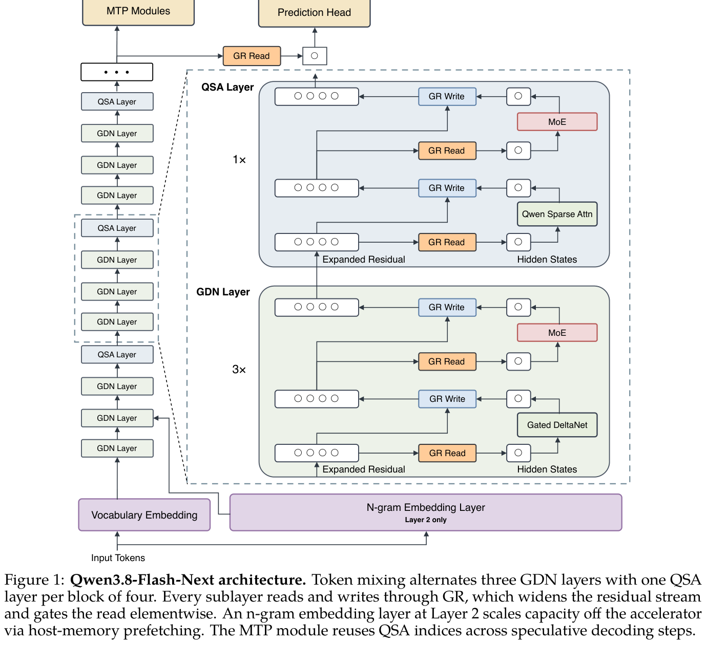
评估。损失与下游准确率并不总是同步变化，我们观察到两个方向上的分歧。增大 n-gram 词表会使损失单调下降，而下游准确率趋于饱和；在固定参数预算下，损失最优点与准确率最优点不同（表 9、表 8）。反过来，根据残差状态预测残差的读写权重，只带来很小的损失下降，却带来明确的基准收益（§2.2）。还有一些分歧到后期才出现：将每个块限制为仅使用门控值最高的两个残差分支，几乎不影响预训练损失，但随着进一步训练会发生退化（§2.2）；从全 attention 层移除位置编码，在预训练期间表现无法区分，却会影响后期阶段的生成质量（§2.1.1）。在后续章节中，为简洁起见，当损失与基准同步变化时，我们只报告损失。
效率。我们分别评估训练、prefill 和 decoding 阶段的成本。在训练中，FlashQLA 在 GPU 上相较 Triton 基线实现 2–3 倍的前向加速和约 2 倍的反向加速（§2.1.1）。Muon 也引入了自身的工程成本：其每个参数的 FLOPs 取决于矩阵形状而非参数量，因此按照估算的正交化成本重新划分DPgradient缓冲区；拆分融合参数之后，其优化步骤会碎片化为许多小 kernel，因此使用 CUDA graph 捕获该步骤（§3.1）。我们将 Newton–Schulz 迭代设为 8 步，以获得压力条件下额外的稳定性。推理时，prefill 主要受整个上下文上的 attention 计算支配；QSA 通过将键序列压缩 \(r\) 倍来处理这一问题，将索引器成本从 \(O(n^2)\) 降至 \(O(n^2/r)\)。Decoding 主要受内存流量支配，因此 GDN 层保持固定大小的循环状态，GR 移除分支混合算子 \(H_{\mathrm{res}}\)，并且残差状态支持 FP8 存储。在 1M 上下文长度下，QSA 在 kernel 层面的 prefill 速度是稠密 attention 的 7.6 倍，decoding 速度是其 4.9 倍。
优化。Muon（Jordan et al., 2024）用于充当线性映射的二维权重；输入 embedding、n-gram embedding、输出头、MoE 路由器及 GR 的低秩投影继续使用——
（本句接原文第 3 页。）
（接原文第 2 页“优化”。）
AdamW，因为对这些参数进行正交化要么不可行，要么无益（§3.1）。融合参数在正交化前会先拆分，因为对拼接矩阵进行正交化会混合不相关子块的奇异方向（§3.1）。新架构和优化器还会改变最优超参数，因此我们重新拟合 Qwen3.5 系列所用的 scaling laws（Kaplan et al., 2020）（§3.2）。新的 scaling laws 预测更大的 batch 大小和学习率；两项预测都经过独立验证并得到确认。更大的 batch 大小改善大规模并行吞吐量，更大的学习率改善收敛。训练早期逐步增大 batch 大小，其最终效果不优于一开始就采用目标 batch 大小，而且需要多 18.8% 的优化器步数，因此我们不采用这种方法（§3.2）。
训练稳定性。我们通过压力测试验证训练稳定性：提高学习率（Wortsman et al., 2023），并保持恒定学习率，以在中等模型规模下复现大规模训练的不稳定性。标准是在同等压力下，新方案必须至少与它替代的上一代方案一样稳定。在最优学习率的四倍下，旧结构频繁出现尖峰，而新方案始终稳定（§3.3）。在单变量对照中隔离 GR 门控的作用，确认它是相较 Qwen3.5 架构获得更大稳定性裕量的关键因素。这些稳定性改进直接使 Qwen3.8-Flash-Next 的全规模训练顺利进行，全程没有一次 loss spike 或 gradient 范数异常波动，也不依赖 qk-clip（Kimi Team, 2025）或 SwiGLU-clip（Agarwal et al., 2025）等显式裁剪方法。
文章结构。§2.1.1 和 §2.1.2 介绍 token 混合。§2.2 讨论 gated residual，§2.3 讨论 n-gram embedding 层，§3.1 讨论优化器，§3.2 讨论超参数缩放，§3.3 讨论稳定性压力测试。随后对得到的基础模型和后训练模型进行评估。
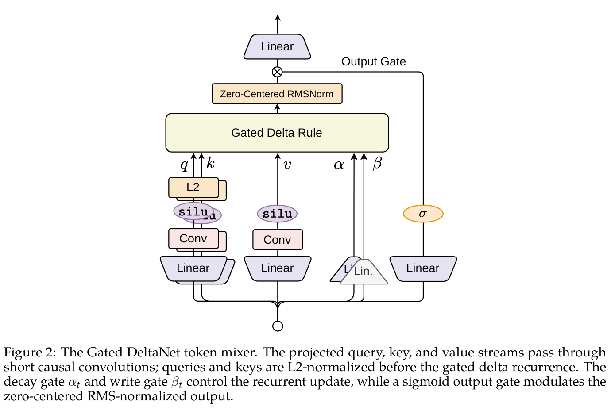
动机。全自 attention 提供基于内容直接访问每个先前 token 的能力，但其 token 混合成本随序列长度呈平方增长，在自回归生成期间，键值（KV）缓存呈线性增长（Vaswani et al., 2017）。SWA 用有限的局部感受野代替全局访问，减少计算量与缓存消耗。然而，——
（本句接原文第 4 页。）
（接原文第 3 页。）
窗口之外的信息只能通过网络深度间接传播。这在高效局部处理与持久的内容依赖记忆之间形成了矛盾。
我们通过 Gated DeltaNet（GDN）（Yang et al., 2024）与全局 attention 的逐层混合来解决这一矛盾。GDN 将前缀压缩为固定大小的循环状态，并根据当前内容更新该状态；交错配置的全局 attention 层则保留直接的 token 级检索能力，任何有限状态循环记忆都难以精确复现这种能力。
这一设计选择与表 1 报告的架构消融结果一致。相较全 attention Transformer 基线，GDN 混合模型在九个选定基准中的八个上取得提升。相较 SWA 混合模型，它在九个基准中的七个上更强。这些结果支持采用混合设计，但仅凭这些结果，无法隔离究竟哪个架构组件导致了各项提升。
门控 Delta 递推。线性 attention 可被解释为一种快权重记忆，用矩阵状态存储键值关联（Schlag et al., 2021）。对每个头，令 \(q_{t}, k_{t} \in \mathbb{R} ^{d_{k}}\)，\(v_{t} \in \mathbb{R} ^{d_{v}}\)。遵循实现中的约定，GDN 维护状态 \(S_{t} \in \mathbb{R} ^{d_{k}\times d_{v}}\)，这是原始公式所采用状态约定的转置，并应用门控 Delta 规则（Yang et al., 2024）：
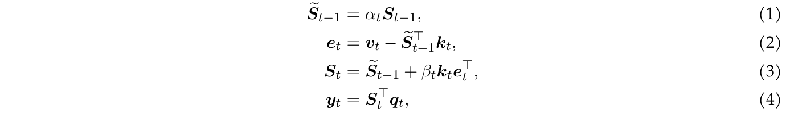
其中 \(\alpha _{t} \in (0, 1)\) 是依赖数据的衰减系数，\(\beta _{t} \in (0, 1)\) 控制 Delta 更新。等价地，
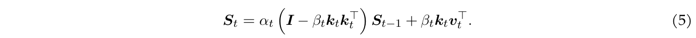
两个门控发挥互补作用。衰减 \(\alpha _{t}\) 从全局控制现有状态的寿命，而 Delta 项首先估计已经与 \(k_{t}\) 关联的值，只写入残余误差。因此，重复或相似的键会更新现有的关联，而不会累积无界的外积。这种有针对性的擦除与写入操作，使 GDN 区别于纯加法式线性 attention。
GDN 参数化。给定归一化后的 residual stream 输入 \(x_{t} \in \mathbb{R} ^{d}\)，GDN 通过可学习投影以及随后一个短的逐通道因果卷积计算内容特征：
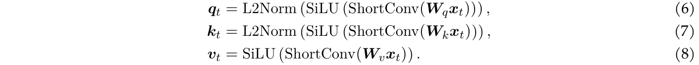
短卷积在信息压缩进循环状态之前提供了显式的局部归纳偏置。L2 归一化限制 q/k 的幅值，使秩一 Delta 状态转移更加稳定。
写入强度与衰减的参数化方式为
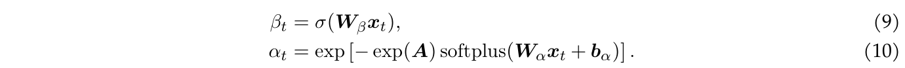
在各个头上独立应用递推之后，对各头输出进行归一化，并通过依赖输入的输出门控进行调制：
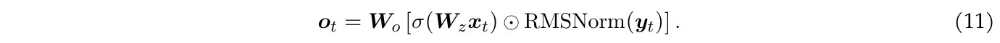
原始 GDN 使用 SiLU 输出门控，而我们在公式（11）中采用有界的 sigmoid 门控，并在实验中观察到一致的提升。遵循 Qwen3-Next，我们采用零中心 RMSNorm，以限制 RMSNorm 权重的增长。同一形式也一致应用于模型中所有其他 RMSNorm 层。图 2 总结了完整的 GDN token 混合路径。
在模型层面，我们的混合架构在全 attention 层中保留 RoPE（Su et al., 2024）。RoPE 与不使用位置编码的 NoPE 变体在预训练期间差异很小，但 NoPE 变体在后训练之后出现无休止生成的比例显著更高，因此更容易无法终止。我们每四层放置一个这样的全 attention 层，另外三层采用 GDN。这一配置在效率与质量之间取得了良好平衡，同时周期性的全 attention 对长上下文性能尤为重要。
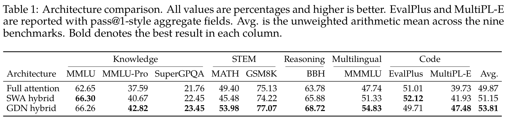
Kernel 效率。为提高效率，我们使用 FlashQLA 优化 GDN kernel，这是一个基于 TileLang 的融合线性 attention kernel 库。在 NVIDIA GPU 上的多种设置中，FlashQLA 相较 FLA Triton kernel（Yang & Zhang, 2024）实现 2–3 倍的前向加速和约 2 倍的反向加速。实现与基准测试见 https://github.com/QwenLM/FlashQLA。
架构消融。我们比较使用相同评估流程评估的三个 checkpoint：全 attention Transformer、SWA 混合模型和 GDN 混合模型。两个混合变体都是每四层使用一个全 attention 层；其余 token 混合层分别使用 SWA 或 GDN，SWA 层的窗口大小为 128。每个 checkpoint 均对应一个基于 Qwen3.5 架构的 28 层 25B-A3B MoE 模型，先以 4K 上下文长度在 400B token 上预训练，随后以 32K 上下文长度在 80B token 上预训练。我们报告 MMLU（Hendrycks et al., 2021a）、MMLU-Pro（Wang et al., 2024）和 SuperGPQA（Du et al., 2025）的知识结果；MATH（Hendrycks et al., 2021b）和 GSM8K（Cobbe et al., 2021）的 STEM 结果；BBH（Suzgun et al., 2023）的推理结果；MMMLU（OpenAI, 2024）的多语言结果；以及 EvalPlus 和 MultiPL-E（Cassano et al., 2023）的编程结果。结果见表 1。
GDN 混合模型在九个选定基准中的八个上优于 Transformer，在七个上超过 SWA 混合模型。它在七个基准上取得最佳结果，并获得最高的总体平均分，而 SWA 混合模型在 MMLU 上略高，在 EvalPlus 上更强。
动机。通过有选择地关注重要上下文，稀疏 attention 缓解了长上下文场景中 softmax attention 的平方计算瓶颈。近期，DSA（Liu et al., 2025a）使用轻量索引器生成 token 级稀疏掩码，实现了可观的推理加速。然而，随着序列长度增加，其 \(O(n^2)\) 索引器的开销仍不可忽略。
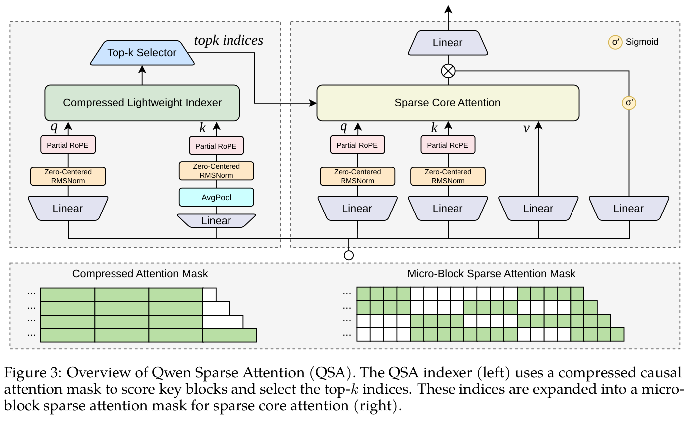
为降低索引成本，Qwen3.8-Flash-Next 采用 Qwen Sparse Attention（QSA）。具体而言，QSA 使用轻量索引器，将序列压缩为微块表示，估计其重要性，并为 attention 计算选择最相关的上下文。这一设计在平衡任务性能与推理效率的同时，降低长输入上的索引开销。相较跨层共享索引的方法，QSA 的层内序列压缩对跨层相似性的依赖更小，因此天然适合混合架构。
图 3 展示了 QSA 架构。压缩的轻量索引器首先以微块粒度估计上下文的重要性，随后指导核心 attention 模块的稀疏计算。
压缩的轻量索引器。给定输入隐藏状态 \(x_{i}\)，索引器采用具有 \(H\) 个查询头和一个共享键头的 MQA（Shazeer, 2019）。它首先应用相互独立的轻量投影：
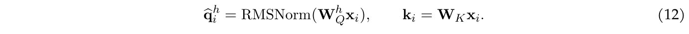
为缩短序列长度，将键划分为互不重叠的块，每块含 \(r\) 个 token，并通过平均池化压缩。令块 \(b\) 的起始位置为 \(p_{b} = b \cdot r\)，则对应的压缩键为
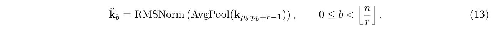
对于位置编码，索引器采用部分 RoPE。具体而言，每个索引器头的 128 个维度中有 64 个应用部分 RoPE，与核心 attention 模块使用的旋转维度一致。如公式（13）所示，键压缩在位置编码之前执行。因此，每个块先汇总为内容表示，再赋予一个块级位置。这一顺序避免了对具有不同旋转相位的 token 表示求平均。每个查询保留自己的 token 位置 \(i\)，而每个压缩键被赋予所在块的起始位置 \(p_{b}\)：
qhi = PRoPE(q̂hi, i)， k̄b = PRoPE(k̂b, pb)。 （14）
随后，通过块级因果评分得到块级重要性分数 \(I\)。对查询 token \(i\) 和压缩块 \(b\)，在所有索引器头上，对经 ReLU 激活的查询与键的相似度求和：
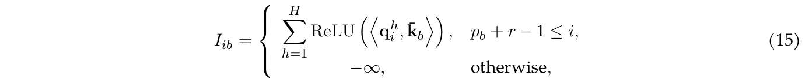
这一块级因果条件仅允许各查询对已经完整观察到的块评分。给定 token 预算 \(K\)，每个查询选择分数最高的压缩块。因为每块包含 \(r\) 个 token，块预算为 \(K_B=\lceil K/r\rceil\)：
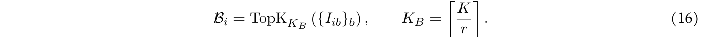
随后，将选中的块展开为原始 token 索引，并截断至预算 \(K\)。它们与最后一个不完整块中始终保留的 token 一起，构成核心 attention 计算使用的最终集合。
训练细节。QSA 在 Qwen3.8-Flash-Next 的持续预训练（CPT）阶段引入，序列长度为 256K token。训练流程包含两个阶段：稠密蒸馏与稀疏训练。
阶段 1：稠密蒸馏。我们首先将主干的全序列 attention 分布蒸馏至索引器。Token 级教师分布通过对所有教师头的 softmax attention 分布求和，并进行 L1 归一化得到。令查询 \(i\) 到 token \(j\) 的结果概率为 \(a_{ij}\)，完整的 token 级分布为 \(a_{i} \in \mathbb{R} ^{n}\)。遵循先前工作（Gao et al., 2024; Wang et al., 2026b），我们应用最大池化，使该分布与块级索引器分数对齐，从而保留可能在聚合中被稀释的重要 token 级信号：
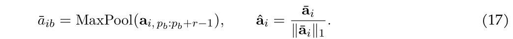
令 \(B=\lfloor n/r\rfloor\)，池化后的教师分布 \(\hat{a}_i\in\mathbb{R}^B\) 与索引器分数 \(I_{i} \in \mathbb{R} ^{B}\) 具有相同的块维度。通过最小化以下目标，将归一化后的教师分数蒸馏至索引器：
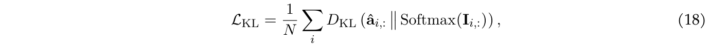
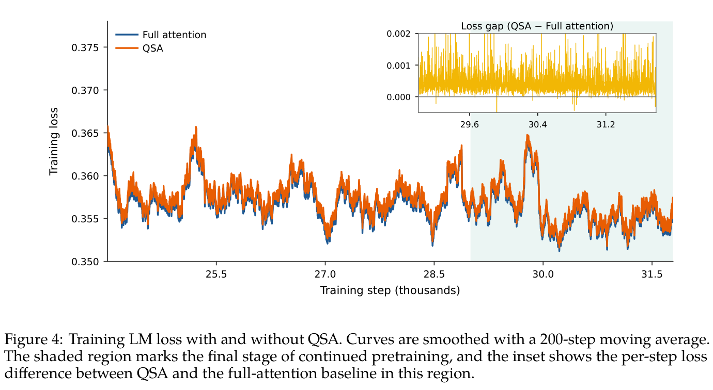
（接原文第 6 页，阶段 1。）
其中 \(N\) 是查询 token 数。对每个查询，KL 损失只纳入完整的键块。在 warmup 阶段，仅训练索引器 1,000 步，学习率为 \(1 \times 10^{-3}\)。每步包含 8 个长度为 256K token 的序列，总训练量约为 2B token。
阶段 2：稀疏训练。索引器初始化后，在其指导下训练整个主干，以适应稀疏 attention 模式。遵循公式（16），QSA 首先选择前 \(K_{B}\) 个块。这些块被展开为 token 索引，并与最后一个不完整块中的尾部 token 合并：
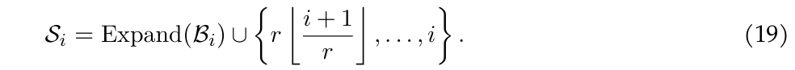
Expand 算子将选中的块映射到其 token 索引。结果集合 \(S_{i}\) 用于核心 attention 计算。在此阶段，索引器 KL 损失只在 \(B_{i}\) 中排名前 \(K_{B}\) 的块上计算。计算 KL 散度之前，\(B_{i}\) 内的教师概率会重新归一化，使其总和为一：
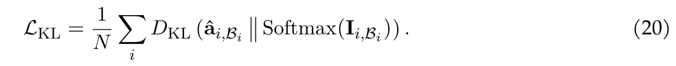
在 CPT 的最后阶段，启用 QSA，并以 \(2.5 \times 10^{-5}\) 的学习率联合训练主干和索引器 8,000 步。每步包含 96 个长度为 256K token 的序列，训练 token 总量约为 200B。
实现细节。对于 Qwen3.8-Flash-Next，主干和 MTP 模块中的所有全 attention 层都替换为 QSA，以提高长序列推理效率。压缩的轻量索引器采用具有四个查询头和一个共享键头的 MQA 结构，并使用前述部分 RoPE 配置。Token 预算 \(K=2048\)、压缩比 \(r=4\) 时，QSA 为每个查询最多选择 512 个完整块，并额外纳入最后一个不完整块中的尾部 token。索引器对重要性的准确估计，使模型在阶段 2 稀疏训练中能够紧密匹配全 attention 的 LM 损失轨迹。如图 4 所示，两条损失曲线高度一致，总体损失差为 \(10^{-4}\) 量级。
为高效训练，我们实现了融合 QSA kernel，在不显式生成中间结果的情况下，同时计算稀疏 attention 输出与 KL 损失，显著降低内存消耗。压缩索引器在压缩后的序列上评分，同时降低索引器计算与 top-k 选择的开销。此外，多步 MTP 在预测步骤之间复用 top-k 索引，进一步降低草稿模型的推理成本。
QSA 评估。我们通过比较使用 QSA 的 Qwen3.8-Flash-Next 与其全 attention 基线来评估 QSA。表 2 报告知识、STEM、推理、多语言及编程基准的结果，广泛评估稀疏 attention 是否影响模型在长上下文检索之外的——
（本句接原文第 8 页。）
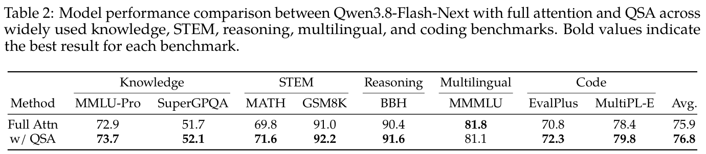
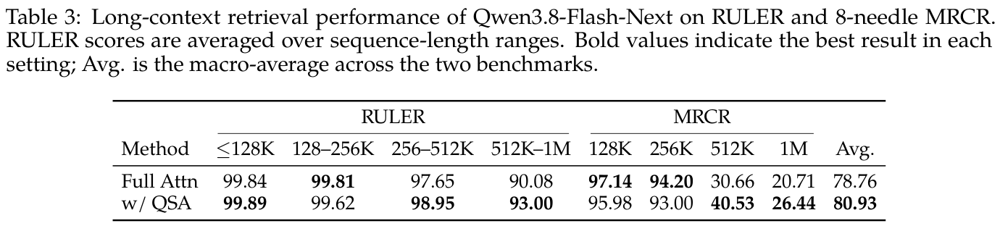
（接原文第 7 页。）
通用能力。QSA 在八个基准中的七个上达到或超过全 attention 基线，平均分从 75.9 提高到 76.8。其余差异较小，没有显示任何任务类别发生系统性退化。总体而言，这些结果表明，QSA 在实现更高效长上下文推理的同时，保留了模型在短上下文任务上的通用能力。
除短上下文基准外，我们在两个广泛使用的长上下文基准 RULER（Hsieh et al., 2024）和 MRCR（OpenAI, 2025）上评估 QSA 的检索能力。我们以 4K 到 1000K 的序列长度评估 RULER，以 128K 到 1M 的长度评估 8-needle MRCR 设置，结果见表 3。较短长度下，QSA 与全 attention 相当；随着上下文增长，表现更好。具体而言，超过 512K 时，QSA 将 RULER 分数从 90.08 提升到 93.00。MRCR 分数在 512K 时从 30.66 提升到 40.53，在 1M 时从 20.71 提升到 26.44。这些结果表明，QSA 在不牺牲任务性能的前提下改善长上下文推理效率，而且在更长序列长度下带来进一步收益。
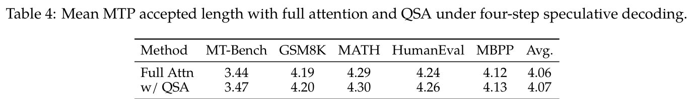
我们进一步考察 QSA 对 MTP 模块的影响。除用 QSA 替换 MTP 中的 attention 层外，我们遵循 GLM（GLM-5-Team, 2026），在 speculative decoding 步骤之间复用 top-k 索引，进一步提高草稿模型的效率。为评估复用 QSA 是否影响 MTP 性能，我们在不同领域的基准上开展四步 speculative decoding 实验，结果见表 4。结果表明，复用 QSA 后，平均接受长度没有显著变化。
架构消融。我们在 35B-A3B 规模上开展 QSA 架构消融，重点考察压缩比与索引器头数。如图 5 所示，我们使用序列长度最高为 1M 的 RULER（Hsieh et al., 2024）分数作为评估指标。所有实验均使用阶段 2 稀疏训练之后得到的 CPT 模型进行评估。
对于压缩比消融，我们评估不同微块大小下的 QSA。此外，我们纳入训练感知的 IndexShare（Bai et al., 2026）作为基线，它通过在混合模型相邻的全 attention 层之间均匀共享 top-K 索引，降低索引开销。在图 5(a) 中，我们将两种方法的 RULER 性能与估算的索引器延迟降低幅度对照报告。QSA 在相对索引器延迟为 0.25 时达到全 attention 基线水平，而 IndexShare 在 0.5 时仍低于基线。对于 IndexShare，0.5 表示在由三个 GDN 层隔开的两个全 attention 层之间共享一个索引。这一结果突出了层内压缩在混合架构中的优势，因为跨层索引共享可能受到较低层间相似性的限制。
查询头数直接影响索引器效率，尤其在 prefill 阶段。因此，我们在 RULER 上评估具有不同查询头数的 MQA 索引器，如图 5(b) 所示。
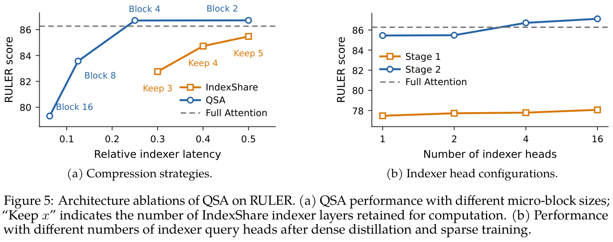
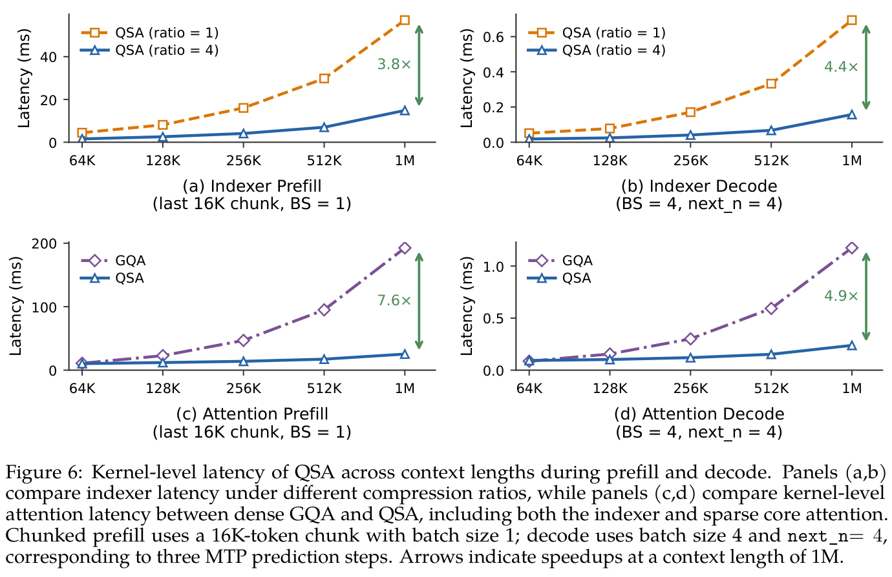
在稠密初始化之后，直接使用索引器进行稀疏 attention 计算，会导致明显的性能下降。短时间的联合训练让主干适应稀疏 attention 模式，并恢复到全 attention 水平。结果表明，只需少量索引器查询头，QSA 就能保持性能，头数远少于核心 attention 模块所使用的数量。为平衡推理速度与准确率，我们最终采用 4 个查询头作为轻量索引器配置。
效率分析。通过以 \(r\) 的比例压缩键序列，QSA 将索引器复杂度从 \(O(n^2)\) 降低到 \(O(n^2/r)\)，在长序列上带来显著效率收益。对于索引器，序列压缩直接减少 MQA logits 计算及 top-k 选择，实现与压缩比相当的加速。如图 6(a,b) 所示，这显著降低了长序列推理成本，在此情形下，索引器会成为主要瓶颈。
我们进一步评估 QSA 的 kernel 级加速，同时计入索引器成本和稀疏核心 attention 计算。对于稠密 attention 基线，我们采用 FlashInfer（Ye et al., 2025）提供的分页 GQA 实现。Prefill 在分块 prefill 设置下评估，decoding 则包含三个额外的 MTP 步骤。如图 6(c,d) 所示，QSA 从 64K 上下文长度开始提供加速，随着序列增长，收益越来越大。在 1M 上下文长度下，QSA 在 prefill 和 decoding 阶段分别实现 7.6 倍和 4.9 倍的 attention 模块加速，展示了其长上下文推理的可扩展性。
动机。残差连接为每个块提供一条直达网络输出的路径（He et al., 2016）。预归一化使大规模训练保持稳定（Xiong et al., 2020），但会削弱每层接收到的信号：所有块读取同一条流，因此早期写入的特征必须与后来写入的所有内容竞争。多条研究路线通过增加绕过这一瓶颈的路径来解决问题，包括密集的层间连接（Huang et al., 2017）、为 attention 值增加残差路径（Zhou et al., 2024），以及跨层复用缓存状态（Sun et al., 2024）。
直接修改残差路径的工作分为两类。第一类沿用 highway networks（Srivastava et al., 2015），使每层的读写更有表达力。第二类拓宽流本身：Alternating Updates（AltUp）（Baykal et al., 2023）和 Hyper-Connections（HC）（Zhu et al., 2024）用多个并行分支代替单个残差向量。两者互补：拓宽增加容量，更丰富的读写机制决定如何使用这些容量。
拓宽 residual stream。我们首先研究已报告收益中有多少仅来自宽度，采用适配预归一化网络的简化 AltUp（Baykal et al., 2023）变体。块 \(\ell\) 之前的残差状态是一组 \(n_{r}\) 个分支 \(R^{(\ell )} \in \mathbb{R} ^{n_{r}\times d}\)，其中 \(d\) 为隐藏维度，\(R^{(\ell )}_{i}\) 表示分支 \(i\)。每个块拥有 \(n_{r}\) 个可学习标量 \(h \in \mathbb{R} ^{n_{r}}\)，将分支加权求和作为输入：
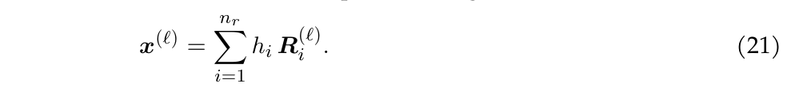
随后，块输出 \(y^{(\ell )}\) 被写回单个分支，按深度以轮转方式选择该分支：
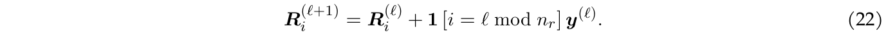
这为每个块增加 \(n_{r}\) 个参数，不增加矩阵乘法，因此计算成本可忽略；额外成本是携带 \(n_{r}\) 个分支而非一个分支所产生的内存流量。即便如此，它使一个在 400B token 上训练的 25B-A3B MoE 模型的训练损失降低约 0.01。因此，仅拓宽就能显著降低损失。剩下的问题是，在拓宽后的流之上，值得增加多少读写机制，以在性能、效率和稳定性之间取得良好平衡。
Hyper-Connections（HC）。HC 将公式（21）和（22）推广为三个可学习算子。读取算子 \(H_{\mathrm{mix}}\) 构造块输入，写入算子 \(H_{\mathrm{combine}}\) 将块输出分配到各分支，混合算子 \(H_{\mathrm{res}}\) 则在分支之间交换信息：
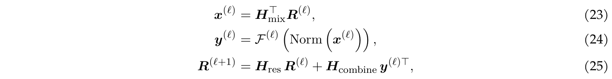
其中 \(H_{\mathrm{mix}}, H_{\mathrm{combine}} \in \mathbb{R} ^{n_{r}}\)，\(H_{\mathrm{res}} \in \mathbb{R} ^{n_{r}\times n_{r}}\)。在 HC 的记号中，它们分别是 \(A_{m}\)、\(B\) 和 \(A_{r}\)。这三个算子根据残差状态预测。令 \(\bar{R}\) = \(\operatorname{norm}(R^{(\ell )})\) 为归一化后的分支表示，则每个算子均由静态项和依赖数据的项相加组成：
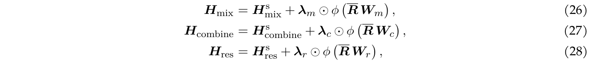
其中 \(H^{s}_{\star }\) 是可学习静态项，\(W_{\star }\) 投影归一化后的残差，\(\phi\) 是激活函数，\(\lambda _{\star }\) 是可学习缩放系数，\(\star\) 表示这三个算子中的任意一个。HC 使用 \(\phi = \tanh\)，\(\lambda _{\star }\) 初始化为 0.01；mHC（Xie et al., 2025）使用 sigmoid，并额外将 \(H_{\mathrm{res}}\) 约束到双随机矩阵流形上。具体而言，我们将静态项设为 \(H^{s}_{\mathrm{mix}} = e_{\ell \bmod n_{r}}\)、\(H^{s}_{\mathrm{combine}} = 1\)、\(H^{s}_{\mathrm{res}} = I\)。当 \(W_{\star } = 0\) 时，这一初始化使拓宽后的网络起点与预归一化基线完全一致；若始终令 \(\lambda _{\star } = 0\)，则算子保持静态，拓宽后的流不产生额外计算，由此恢复上面的简化 AltUp 变体。
设计消融。从静态算子出发，我们仅在收益足以抵偿成本的地方保留新增的表达能力。表 5 报告这一演进过程的端点，采用 §2.1.1 的基准集合与评估流程进行评估。五项观察塑造了最终设计。
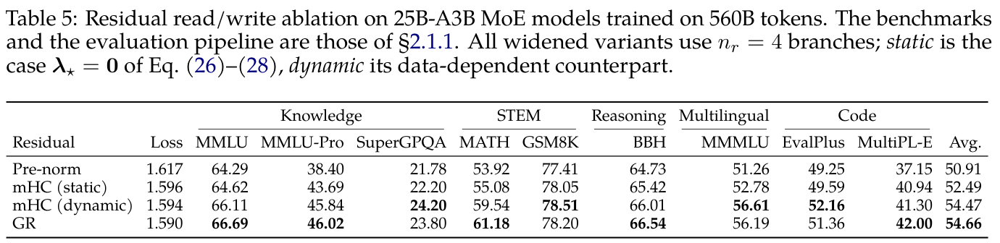
通过静态算子拓宽流，相较预归一化基线已经带来平均准确率 1.58 分的收益；使读写依赖数据，又进一步增加 1.98 分。mHC 静态与动态版本之间的损失差仅为 0.002，但基准差距很大；在这一案例中，仅看损失会低估改动的价值，这也强化了我们在整个设计过程中同时检查基准和损失的做法。下面介绍 GR 的具体设计。
Gated residual。在另一项工作（Qiu et al., 2026）中，我们发现，在 RMSNorm 之后添加轻量的逐元素自门控，可以显著改善训练稳定性，我们称之为 GatedNorm：
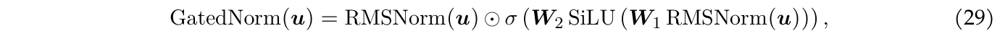
其中 \(W_{1}\) 与 \(W_{2}\) 形成低秩瓶颈。消融所得的读取方式，具有逐元素、依赖数据和 sigmoid 门控的特点，恰好就是将公式（29）应用于拓宽后的流。因此，我们将二者合并为一个算子，并称之为 Gated Residual（GR）。
GR 首先独立归一化每个分支，
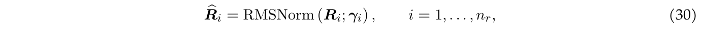
每个分支均有自己的增益 \(\gamma _{i} \in \mathbb{R} ^{d}\)。随后，它根据所有分支，预测每个分支和通道的逐元素门控分数，将门控后的分支平均作为块输入：
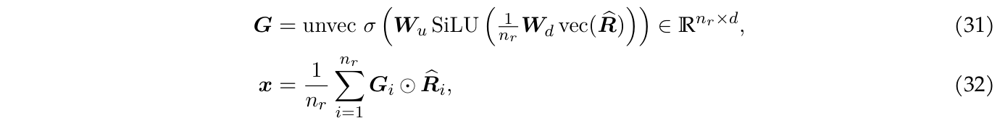
其中 vec 将各分支堆叠为一个长度为 \(n_{r}d\) 的向量，unvec 为其逆操作，\(W_{d} \in \mathbb{R} ^{r\times n_{r}d}\)、\(W_{u} \in \mathbb{R} ^{n_{r}d\times r}\)，瓶颈秩 \(r=d/8\)。块输出 \(y=F(x)\) 通过每个分支一个依赖数据的标量，写入所有分支：
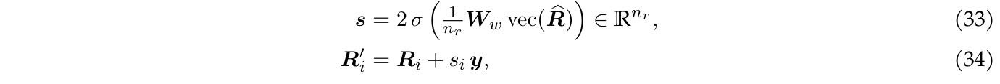
其中 \(W_{w} \in \mathbb{R} ^{n_{r}\times n_{r}d}\)。公式（31）和（33）分别是公式（26）和（27）的读取与写入算子，其中 \(\phi = \sigma\)，\(H_{\mathrm{mix}}\) 为逐元素权重，\(H_{\mathrm{combine}}\) 为每个分支一个标量，而 \(\bar{R}\) 为所有分支的分组 RMSNorm。静态项 \(H^{s}_{\star }\) 不会为 GR 带来改善。在当前配置下，可学习权重不需要特殊初始化，静态项的贡献可忽略；采用主干所用的标准随机初始化即可。我们使用 \(n_{r} = 4\) 个分支，每层的 attention 块和 MLP 块各有独立的 GR 模块。
在表 5 中，GR 与 mHC（动态）的主要差别是逐元素 \(H_{\mathrm{mix}}\) 和移除 \(H_{\mathrm{res}}\)；在这一规模下，两者表现相当。GR 的效率优势在于，移除 \(H_{\mathrm{res}}\) 消除了每个块对残差状态的一次完整读取，降低内存流量。稳定性优势有两方面：GatedNorm 本身改善训练稳定性（§3.3 分析），而移除需要单独约束的 \(H_{\mathrm{res}}\)，也消除了潜在的不稳定来源。
GR 与 HC、mHC 和 VWN（Seed, 2025）属于同一类方法；区别在于新增的表达能力用在何处。HC 和 mHC 让读写保持为每个分支一个标量，将容量投入 \(H_{\mathrm{res}}\)，mHC 进一步将其约束为双随机矩阵。VWN 也保留这些标量，转而拓宽 token embedding，将其拆分为许多窄片段；这种拆分同样追求更细粒度的读写操作。GR 将表达能力投入读取：门控为逐元素形式，完全移除 \(H_{\mathrm{res}}\)；消融表明，这样做没有性能代价，并且消除了每个块对整个残差状态的一次读取，而这正是拓宽流的主要推理成本。
由于公式（32）的读取已经完成归一化与门控，GR 还替代了块的预归一化，而不是置于它之前：公式（24）去掉 Norm，拓宽也不增加归一化层。没有混合算子时，分支始终保持独立，因为分支只由块写入，并通过公式（32）读取。这使信息流易于追踪，我们在 §2.2 的分析中利用了这一点。
与 Attention Residual 的比较。Attention Residual（AttnRes）（Team et al., 2026）在早期层的输出上使用 softmax attention，决定每个子层的读取内容。Full AttnRes 关注所有先前子层的输出。Block AttnRes 将 \(L\) 个子层划分为大小为 \(S\) 的块，将每块求和为一个表示，并对这些表示进行 attention 计算。
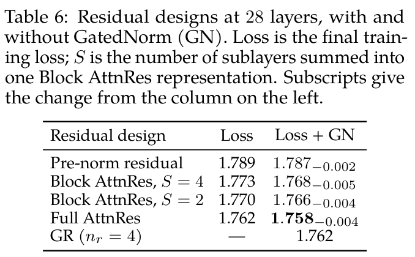
表 6 在我们的设置下比较这两个变体与 GR：一个 28 层模型（\(L=56\) 个子层），每种都分别带有和不带有 GN。Full AttnRes 是这一类方法中最强的设置，损失为 1.762，与 GR 持平；而对块进行汇总，在 \(S=2\) 时增加损失 0.008，在 \(S=4\) 时增加 0.011。更深模型也有相同排序：在 48 层下，\(S=4\) 的 Block AttnRes 达到 1.711，而 GR 为 1.707。GN 在每个设置下都降低损失：对 AttnRes 降低 0.004–0.005，对普通预归一化基线降低 0.002。当子层读取的输入更复杂时，门控帮助更大，而这正是 GR 在读取内部采用的同一门控。
分支用于什么。消融表明 GR 改善了损失和基准，但是什么机制产生了这一收益？由于 GR 不混合残差分支，每个分支只是过去输出的累加器，因此我们可以精确分解每个块所读取的内容，得到每个早期块的贡献。我们用这一分解比较 GR 模型与其余方面完全相同、不带 GR 的参考模型，发现额外宽度被用于几条特定路径：一个分支跨越许多层保存早期 attention 输出，而另外三个分支保持局部。
统计量。块 \(v\) 之前的分支 \(c\) 包含
其中 \(R^{(0)}_{c}\) 是分支 \(c\) 的初始值（token embedding），\(y^{(u)}\) 是块 \(u\) 的输出，\(s^{(u)}_{c}\) 是公式（33）的标量写入门控，控制有多少 \(y^{(u)}\) 进入分支 \(c\)。
块 \(v\) 通过公式（32）的门控读取来读取这一分支：归一化分支，通过可学习的逐通道增益 \(\gamma _{c}\)（来自公式（30））缩放，使用 \(G^{(v)}_{c}\)（公式（31）的数据依赖门控）逐元素门控，并在各分支间求平均。由于归一化除以 \(\operatorname{rms}(R^{(v)}_{c})\)，块 \(u\) 对块 \(v\) 输入的贡献为
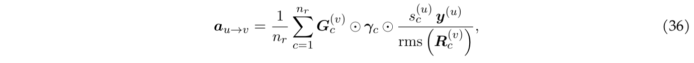
计算使用前向传播实际采用的门控值。每个因子都有直接含义：\(s^{(u)}_{c} y^{(u)}\) 是块 \(u\) 存入分支 \(c\) 的内容；除以 \(\operatorname{rms}(R^{(v)}_{c})\) 计入读取时应用的归一化；\(\gamma _{c}\) 重缩放每个通道；\(G^{(v)}_{c}\) 决定块 \(v\) 实际使用该分支的多少内容。
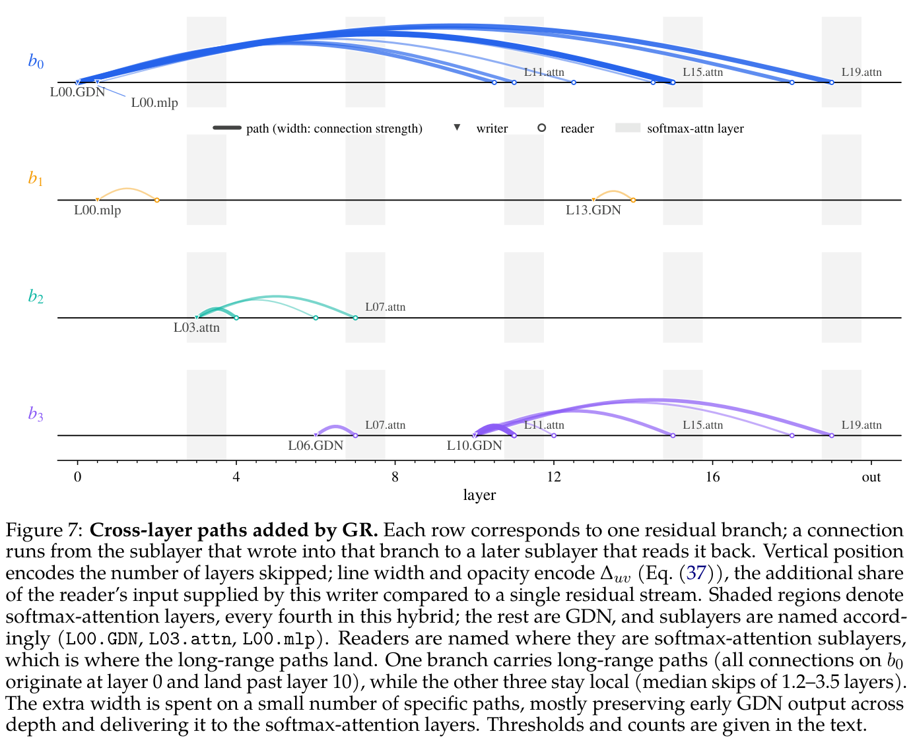
我们报告这一贡献的归一化幅值，
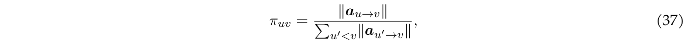
即块 \(v\) 输入中来自块 \(u\) 的比例。因为公式（36）在求和前按分支分解各项贡献，我们能看到每条路径由哪个分支承载。该分解是精确的：每个读取者的份额之和与一的差在 \(3 \times 10^{-8}\) 以内。
我们比较一个使用 GR 训练的 20 层 MoE 与一个其余方面相同、不带 GR 的参考模型，两者采用相同方案、数据、优化器和训练步数，并在相同 token 上探测。我们报告差值 \(\Delta _{uv} = \pi ^{\mathrm{GR}}_{uv} - \pi ^{\mathrm{ref}}_{uv}\)，因为减去参考值可以消除所有残差网络共有的模式，即邻近写入者占主导。
图中所示内容。图 7 显示，在 780 个有序对中，跨越至少一层且 \(\Delta _{uv} \ge 0.05\) 的 21 条路径。作为参照，第 15 层有 30 个写入者，均分时每个约占 0.03；0.13 的份额约为其四倍。
一个分支承载长程路径，另外三个保持局部。具体是哪一个分支并不重要，因为各分支在初始化时可交换，但模式是一致的：五个 GR checkpoint 中，每个都恰好有一个这样的分支，其典型跨越为 10.9 层，而其余分支为 3.4–3.9 层。三个例子说明了这一模式；每个例子先给出参考模型（不带 GR 的单 residual stream）的份额，再给出 GR 下的份额。
分支 0 中典型的长程路径可由公式（35）解释：该分支在第 0 层被大量写入，此后几乎不再更新，因此第 0 层的信息始终可供后续所有层访问。此外，从 GR 分支中读取最强的子层主要是 softmax attention 层，表明全局 attention 是整合显式长程历史上下文的关键枢纽，而这些上下文会被 GDN 层压缩掉。
为查看总体模式，我们按跨越层数对全部 780 条路径分组，在各组内对 \(\Delta _{uv}\) 求和；其中 \(\Delta _{uv}\) 是相较参考模型，GR 为路径 (\(u\), \(v\)) 增加的份额。结果如下：相邻层路径（跨越 1 层）的总份额增加 0.96；长程路径（跨越 > 12 层）的总份额增加 0.91；中程路径（跨越 2–12 层）的总份额减少 3.21。加权平均跨越层数几乎不变（3.97 对 3.91），因此跨层信息总量相近；变化的是分布。GR 选择少数路径并放大它们，代价是削弱中程路径。
推理效率。GR 的推理成本主要来自拓宽后残差状态的内存流量。因此，我们寻找减少搬运字节数的方法。
第一次尝试是稀疏化读取。我们观察到，在训练后的模型中，每个 GR 层的写入通常由两个分支主导。因此，我们尝试从头或在训练中途引入稀疏写入：每个块仅读取门控值最高的两个分支，而非全部 \(n_{r}\) 个分支。预训练损失和基准几乎不受影响，但后训练之后质量明显下降，因此我们未采用。更复杂的变体，例如在不同层使用不同稀疏程度，也没有解决问题。我们将其记为一个仅凭预训练指标会作出错误决策的案例。近期工作 xHC（Zhang et al., 2026）探索采用更大的 \(n_{r}\) 来使稀疏分支更新更容易，但考虑到更大 \(n_{r}\) 的内存开销，我们没有进一步探索这一方向。
第二次尝试是用 FP8 保存残差状态。GR、gated attention 和 GDN 中的门控都限制写入流中内容的幅值，因此残差值保持在狭窄范围内，非常适合低精度格式。相较 BF16，以 FP8 存储分支将残差状态的搬运字节数减半，几乎不损失质量。最后，公式（30）–（32）的读取与公式（33）–（34）的写入分别融合成一个 kernel，将分组 RMSNorm 合入读取，从而每个块在读写两个方向上各遍历一次拓宽后的流。
动机。基于 embedding 的记忆为扩大模型容量提供了互补维度（Jordan & Koszarsky, 2024; Google DeepMind, 2025; RWKV Community, 2025; Gemma Team, 2026; Sadhukhan et al., 2026; Tseng & De Sa, 2026）。N-gram embedding 进一步推广 unigram 查找，将记忆检索的条件从仅有 token 身份扩展为局部上下文（Huang et al., 2021; Roy et al., 2022; Huang et al., 2025; Yu et al., 2025; Cheng et al., 2026; Liu et al., 2026; Chen et al., 2026）。具体而言，以每个 token 结尾的短 n-gram 作为 embedding 表的键，检索得到的向量增强对应的 token 表示。N-gram 记忆扩大容量时，每个 token 的额外 FLOPs 几乎可忽略，而确定性寻址支持卸载至主机内存及异步预取。本节系统研究 N-gram embedding 的关键架构选择。我们使用多头哈希进行 embedding 查找（Roy et al., 2022; Huang et al., 2025）。随后通过上下文门控机制，将 embedding 注入 residual stream（Cheng et al., 2026）。所有实验均采用每个激活参数 300 个 token（TPP）。
我们在固定参数预算下，对 N-gram embedding 层的位置与数量进行消融。单层变体涵盖浅层（第 1–4 层）、中间层（第 10 和 15 层）及深层（第 25 层）。对于多层配置，我们将浅层（第 2 层）与中间层（第 15 层）或深层（第 25 层）组合。结果见表 7。
没有任何单一深度区域始终占优。前两层表现强劲，中间与深层位置也保持竞争力。将相同参数预算分散到多个层，没有带来一致收益。组合第 2 和 25 层所带来的微小损失下降，未转化为下游性能提升。一个 N-gram embedding 层就足够了。此外，全 attention 和 GDN（§2.1.1）下各位置的相对表现相似，说明位置选择基本不受 attention 机制影响。我们将其放在第 2 层，使主机内存预取可以与第 1 层计算重叠。
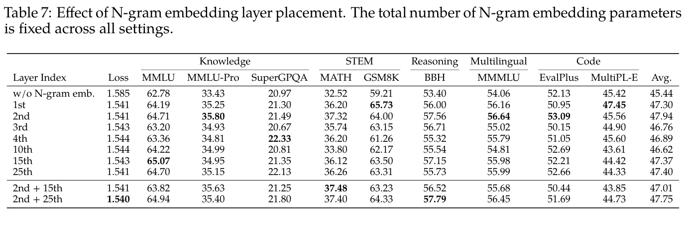
我们进一步探索扩大 N-gram embedding 词表大小的影响。
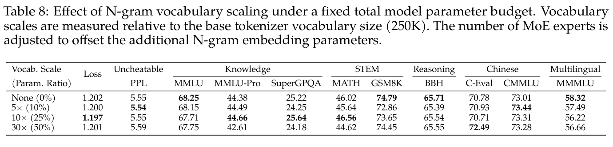
固定参数预算下的分配。遵循先前工作，我们扩大 N-gram embedding 槽位，同时减少专家数，以维持固定的总参数预算。结果见表 8。损失随词表大小呈非单调变化，在 10×（25%）时最低，与先前工作报告的分配最佳区间一致（Liu et al., 2026; Cheng et al., 2026）。其他评估中没有呈现同样的最优点。域外的 uncheatable PPL 在不同预算之间变化很小，下游基准也未显示相较纯 MoE 基线有明确提升。这些结果表明，N-gram embedding 与 MoE 专家在容量扩展中发挥不同作用。因此，我们在保持 MoE 参数预算固定的情况下研究 N-gram 词表扩展。
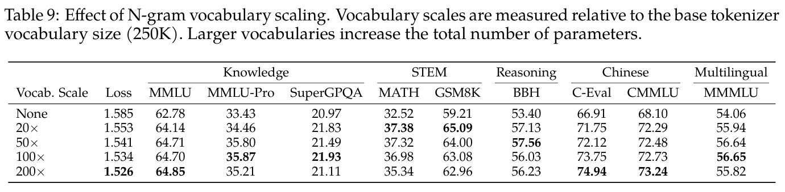
通过增加参数扩展。由于 embedding 表采用稀疏访问和确定性寻址，可以在每个 token 的额外计算几乎可忽略的情况下扩大，并存储在加速器之外（Google DeepMind, 2025; Cheng et al., 2026）。因此，我们超越固定规模设置，将 N-gram 词表从 20V 扩大至 200V，其中 V 表示 Qwen3.5 的基础 tokenizer 词表大小（Qwen Team, 2026）。结果见表 9。随着 N-gram 词表增大，损失单调下降，但下游性能没有遵循同样趋势。词表扩展相较基线带来了广泛收益，但在部分基准上，性能随词表增大而趋于饱和或波动。此外，中文基准（例如 C-Eval 和 CMMLU）的表现随 N-gram 词表大小一致提升。
除词表扩展外，我们探索了多种提高 N-gram embedding 参数效率的策略，包括但不限于：通过 token 归一化压缩词表（Cheng et al., 2026）、在不同 N-gram 阶数之间进行非均匀分配，以及基于频率划分 embedding 槽位。尽管做了这些尝试，我们在自己的训练方案中未观察到一致的性能收益。
动机。基于矩阵的优化器 Muon（Jordan et al., 2024）通过 Newton–Schulz（NS）迭代对动量正交化，计算矩阵参数的更新方向，已有工作证明其在大规模下有效（Liu et al., 2025b; Kimi Team, 2025）。我们使用 Muon 作为主要优化器，发现多项设计选择影响其实际效率与稳定性，下面予以介绍。
正交化。NS 迭代应用于 Nesterov 加速动量（Jordan et al., 2024），其中 \(\mu = 0.95\)；对于形状为 \(A\times B\) 的参数，以 \(\gamma(A,B)=0.2\sqrt{\max(A,B)}\) 缩放正交化后的结果，使更新的 RMS 与矩阵形状无关（Liu et al., 2025b）。对于 NS 迭代，我们采用 Polar Express 方法（Amsel et al., 2025）的逐步系数调度，其在给定步数预算下具有极小极大最优性。我们将迭代步数设为 8，比更少步数提供更精确的正交化，并降低压力测试中 gradient 范数尖峰的幅度与频率。NS 迭代之前的 Frobenius 归一化，其数值稳定常数设为 \(10^{-14}\)。
哪些参数使用 Muon。我们将 Muon 应用于真正充当线性映射的二维权重：attention q/k/v 与输出投影、GDN（Yang et al., 2024）的输入与输出投影、路由专家与共享专家的 fc1/fc2，以及 N-gram embedding 层的键／值投影。输入 embedding 与输出头继续使用 AdamW。对于 MoE 路由器，我们观察到 Muon 会加剧训练早期的波动，使路由器不稳定。虽然在训练中后期对路由器应用 Muon 不会造成不稳定，但我们未发现显著性能收益。因此，路由器使用 AdamW。一种可能的解释是，路由器的每个输出维度对应一个专家的分数，各维度基本独立，没有可供正交化利用的共享线性结构。GR（§2.2）的两个低秩投影同样在 AdamW 下表现更好，我们将其归因于非常细长的形状。最后，n-gram embedding 表使用 Adam，并禁用权重衰减。
拆分融合参数。在 Megatron-LM（Shoeybi et al., 2019）中，attention qkv 投影、SwiGLU（Shazeer, 2020）的 fc1 和 GDN 输入投影分别存为一个融合矩阵，但在语义上，它们都是沿输出维度拼接的独立线性算子。对融合矩阵正交化会产生两个错误：迭代混合了不相关子块的奇异方向，\(\gamma (A, B)\) 也根据拼接后的形状计算，而非真实算子的形状。因此，我们在正交化之前拆分融合 gradient，独立对每个子矩阵运行 NS，在应用更新之前将结果收集回原始布局。qkv 和 GDN 输入投影按头粒度拆分，同时改善损失与下游基准。fc1 拆分为 gate 与 up 两半；损失基本不变，基准略有改善。拆分也提供了排除个别子矩阵、不使用 Muon 的自然粒度。具体而言，GDN 的 decay 与 beta 投影为每个头产生一个标量，因此属于向量，正交化对其没有意义。对于输出门控（attention 输出门控（Qiu et al., 2025b）和 GDN 的 z 投影），消融发现 AdamW 与 Muon 持平或略好。
实现。NS 迭代给 Muon 带来两个主要实现挑战。首先，迭代要求对每个完整参数矩阵进行整体更新（\(K\) 步迭代约需 \(4K\max(A,B)\min(A,B)^2\) FLOPs），与 Megatron 分片存在两方面冲突：在 TP 下，没有进程拥有完整权重矩阵；在 DP 下，成本对较短维度呈三次方关系，因此 Megatron 按等元素数划分会产生严重的慢进程。我们开发了 Canzona，将逻辑优化器分配与物理参数布局解耦（Wang et al., 2026a）：一个 \(\alpha\) 平衡的静态划分器重新分配完整参数（不在张量内部切分），使各 DP 进程估算的 NS FLOPs 均衡；异步 Micro-Group 流水线通过 TP 进程之间融合的 All-to-All，重建每个由 Muon 负责的矩阵。随后，每个负责进程运行与单设备 Muon 数学等价的一步；保留 ZeRO-1 的桶结构，因此保留 Megatron 的 Reduce-Scatter 与反向传播重叠；这一抽象还可扩展到其他基于矩阵的优化器。其次，拆分之后，每层会产生约一百个子矩阵，优化器步骤变为一长串很小的 kernel，受启动开销而非算术计算限制。我们将整个步骤捕获到 CUDA graph 中，以消除这一开销。
动机。选择接近最优的超参数，对高效、稳定的模型训练至关重要。在前几代 Qwen 模型中，我们为关键超参数拟合了 scaling laws，例如——
（本句接原文第 17 页。）
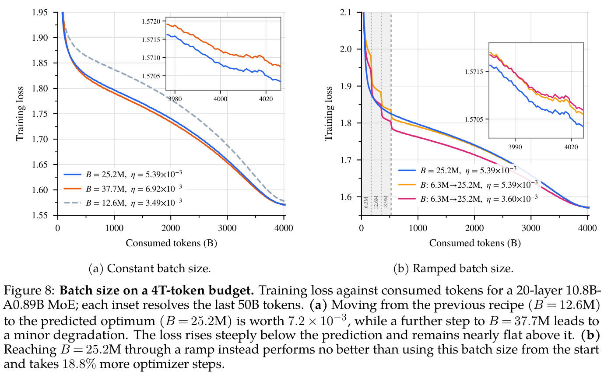
（接原文第 16 页。）
学习率（\(\eta\)）与 batch 大小（\(B\)）（Qwen Team, 2024; Yang et al., 2025）。最优学习率和 batch 大小依赖模型架构与优化器，因此两者都改变之后，对前代模型最优的方案可能变为次优。在原有 Qwen3.5 超参数方案（Qwen Team, 2026）下，我们发现新架构和优化器的训练明显比之前更稳定（§3.3），表明可以采用更激进的超参数设置，进一步改善训练性能。
因此，我们建立了更新的超参数 scaling laws。架构与优化器改动使预测的近最优超参数向显著更大的 batch 大小和学习率移动，且随模型规模增加，学习率下降得更慢。
在小规模上拟合的 scaling laws，只有能可靠外推才有用。我们分别验证学习率和 batch 大小预测，针对每项设计能突出其影响的实验区间：在小模型、较多训练 token 下验证 batch 大小预测（batch 大小过大会导致次优性能），在大模型、有限 token 预算下验证学习率预测（训练不稳定是主要风险）。预测的超参数位于近最优区域，在预训练损失与基准性能上均显著优于原有 Qwen3.5 方案。
大 token 预算下的 batch 大小。batch 大小预测在一个训练 4T token 的 20 层 10.8B-A0.89B MoE 模型上评估。我们比较旧方案（\(B=12.6\mathrm{M}\)）、新 scaling laws 预测的最优值（\(B=25.2\mathrm{M}\)），以及其 1.5 倍的设置（\(B=37.7\mathrm{M}\)）；每个配置都使用 scaling laws 为相应 batch 大小指定的学习率。所有训练使用相同 token 预算，确保比较基于相同计算量。
在最后 20B token 上取平均，\(B=25.2\mathrm{M}\) 时损失为 1.5702，\(B=37.7\mathrm{M}\) 时为 1.5707，旧方案下为 1.5774（图 8a）。因此，新拟合的 scaling laws 相较旧方案改善损失 \(7.2 \times 10^{-3}\)；进一步将 batch 大小增加 1.5 倍，损失增加 \(4.3 \times 10^{-4}\)，这一代价并不显著。低于预测 batch 大小时，损失急剧增大；高于它时，损失进入平台期，说明预测接近最优，足够大以实现性能收益，同时没有过大。
Batch 大小 warmup 不再必要。大规模训练通常在早期逐步增大 batch 大小，而非一开始就使用最终值（Brown et al., 2020; Liu et al., 2024）。理由是，训练早期的临界 batch 大小较小，并随时间增大（McCandlish et al., 2018; Zhang et al., 2024），导致初期使用大 batch 大小效率不高。此外，较小 batch 大小搭配缩放后的学习率（Goyal et al., 2017），通常在初始步骤中更容易稳定。
然而，先前的超参数扫描表明，使用 Muon 优化器时存在不同表现。我们观察到，将 batch 大小减到预测最优值以下，造成的——
（本句接原文第 18 页。）
（接原文第 17 页。）
性能代价比增大 batch 大小更显著；在 AdamW 性能退化的较大 batch 大小下，Muon 仍能保持数据效率（Jordan et al., 2024; Essential AI, 2025）。对于稀疏 MoE 模型，更大的 batch 大小还确保每个专家每步都收到充足、多样的 token 信号，这可能有助于专家专业化（Qiu et al., 2025a）。这些观察共同促使我们提出假设：batch 大小 warmup 可能不再必要。
因此，我们重新测试 batch 大小 warmup。以 6.3M 为增量，将 batch 大小从 6.3M 增大到 25.2M，在 524B token 时达到目标。我们评估两个变体：第一个保持恒定 batch 大小最优设置的峰值学习率，使逐步增大 batch 大小成为唯一差异；第二个降低峰值学习率，以考虑早期较小的 batch 大小。
两个变体都未改善性能（图 8b）。两种逐步增大方案均在不同训练运行间的方差范围内收敛，但仍略差于恒定 batch 大小基线，分别落后 \(2.5 \times 10^{-4}\) 和 \(3.5 \times 10^{-4}\)。此外，在相同 token 预算下，warmup 需要多 18.8% 的优化器步数，带来更大的实际时间开销。训练稳定性也不受影响：这次扫描中，没有任何训练步的损失超过局部中位数 0.1 以上，裁剪前 gradient 范数的 p99.9 为 0.088–0.190，远低于 0.5 的裁剪阈值。
Warmup 训练的损失轨迹揭示了背后机制。Warmup 阶段，在相同学习率下，较小 batch 大小引入更高 gradient 噪声，使损失高于恒定 batch 大小基线。Batch 大小刚达到目标后，由于早期积累了更多优化步骤，warmup 变体可能短暂表现出损失优势。然而，随着学习率衰减、模型接近收敛，步数优势被抵消。最终，恒定 batch 大小基线超过 warmup 训练，得到更好的最终损失。因此，生产训练中不采用 batch 大小 warmup。
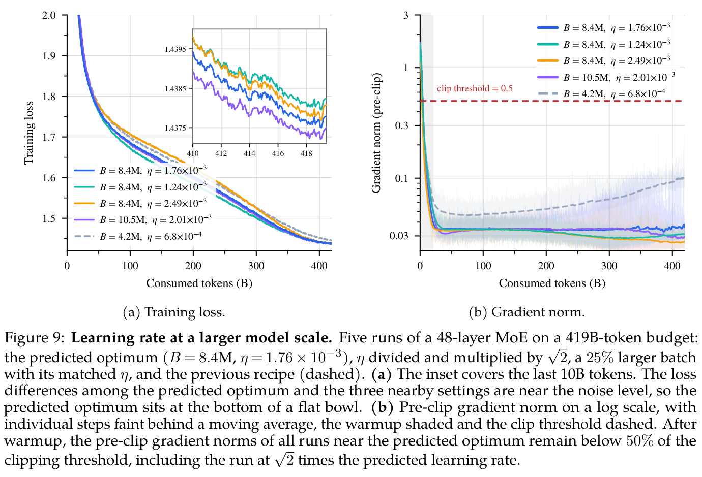
更大模型规模下的学习率。学习率预测在规模大得多的 48 层 156B-A7B MoE 上测试，token 预算为 419B，同样对各次训练一致。我们评估预测最优值、分别缩放为 \(1/\sqrt{2}\) 和 \(\sqrt{2}\) 的学习率、增大 25% 的 batch 大小及其匹配学习率，以及原有超参数方案。
旧方案最终损失比预测最优设置高 \(7.8 \times 10^{-3}\)，而预测最优值附近的四个设置，最终差异在 \(7 \times 10^{-4}\) 以内，接近噪声水平（图 9a）。因此，最优值位于一个平坦盆地的底部，其范围至少涵盖学习率向两侧各变化 \(\sqrt{2}\) 倍，以及 batch 大小增加 25%；更大 batch 大小在四者中名义上最好，优势为 \(3 \times 10^{-4}\)。
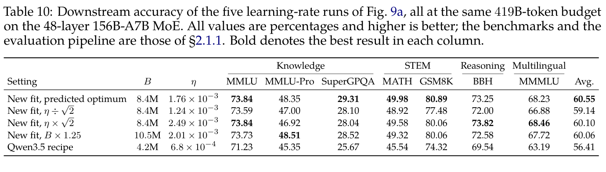
下游基准结果展示了新 scaling laws 拟合所带来的稳健收敛（表 10）。预测最优设置获得最高平均准确率，在多数评估任务上取得最好或并列最好的分数，而旧方案明显落后。关键是，batch 大小或学习率超出预测最优值时，基准表现仅有边际、统计上不显著的下降。这表明优化空间高度稳定，超参数轻微偏离不会使模型泛化能力急剧退化。我们将这些具体排序视为观察结果；鉴于每次训练只进行一次评估，顶尖设置之间差距很小，这些微小变化很可能属于通常的评估噪声。
除最终性能外，大规模模型训练保持稳定至关重要。所有配置的训练动态都异常稳定。五次训练中，warmup 阶段结束后，gradient 裁剪从未触发。在预测最优设置下，裁剪前 gradient 范数的最大值只达到裁剪阈值的 28%；旧方案为 51%，由于 batch 大小较小，其 gradient 噪声更大（图 9b）。此外，损失曲线非常平滑，没有任何 loss spike；没有任何一次训练中出现某步损失超过局部中位数 0.1 以上。即使在这一规模下进一步提高预测学习率，训练仍完全稳定。这证实新 scaling laws 没有危险地过度外推，为大规模训练提供了高效、安全、稳健的超参数方案。
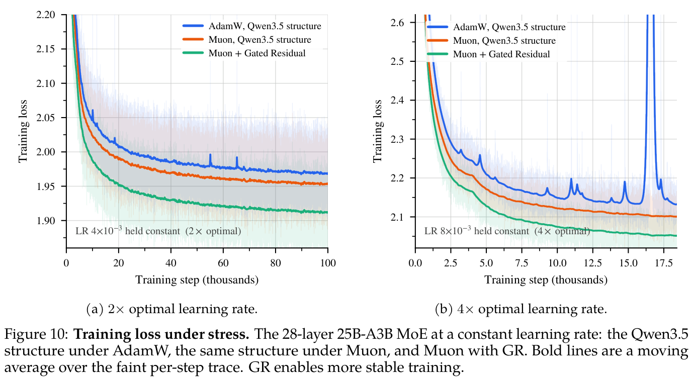
动机。当模型扩展到万亿参数，并在数十万亿 token 上训练时，会进入一种在小规模实验中完全不存在的稳定性挑战区间（Chowdhery et al., 2023; Zhang et al., 2022; Dehghani et al., 2023; Qwen Team, 2026）。例如，长时间训练可能在峰值学习率下经历显著更多的优化器步骤，增加出现不稳定的机会。这类不稳定通常表现为 loss spike 或发散，需要从 checkpoint 重新启动。为在中等规模下高效迭代，同时暴露生产规模下会出现的不稳定性，我们设计了一组压力测试，在更小预算内放大相关压力。当架构和优化器同时改变时，这种验证变得至关重要——
（本句接原文第 20 页。）
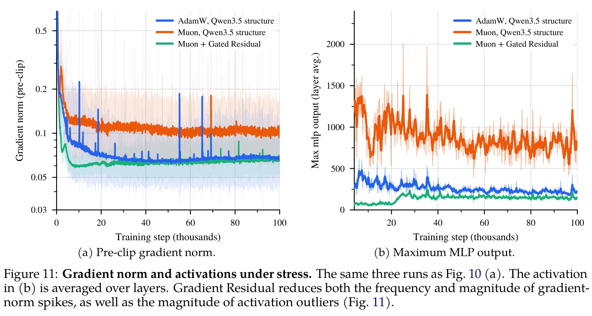
（接原文第 19 页。）
Qwen3.8-Flash-Next 就是如此：gated residual、GDN 混合架构与 Muon 都改变了更新和激活的缩放方式，确认这些变化在长时间训练中仍然稳定，是可靠扩展的前提。
压力测试设计。依据提高学习率能在小模型中复现大规模不稳定性的观察（Wortsman et al., 2023），我们将学习率恒定保持在最优值的某个倍数，绕过标准衰减调度，模拟生产训练长时间保持峰值学习率的情形。我们在一个 28 层 MoE 上应用该测试，学习率分别为最优值的 2 倍和 4 倍。评估标准是，新方案必须至少与先前使用 AdamW 的 Qwen3.5 结构（Qwen Team, 2026）一样稳定，后者已成功扩展。所有训练使用相同 batch 大小和 0.5 的 gradient 范数裁剪阈值（Pascanu et al., 2013）。我们测量三项指标：loss spike（某步超过 201 步滚动中位数 0.1 以上）、裁剪前 gradient 范数的 p99.9 及越过阈值次数，以及每个块的最大激活值。
压力测试结果。压力测试显示新方案有明确的稳定性裕量。在最优学习率的 2 倍下，AdamW 基线开始出现尖峰（每 10k 步 4.3 次），而两个 Muon 配置保持高度稳定（每 10k 步 0.2 次）。在最优学习率的 4 倍下，差异发生质变（图 10）。AdamW 训练每 10k 步出现 183 次尖峰，在 19,932 步中有 213 步超过裁剪阈值，持续触发裁剪器。相比之下，两次 Muon 训练从未超过裁剪阈值，带有 gated residual 的配置记录了零次 loss spike。在同等压力下，新架构与优化器的组合明显更稳定。
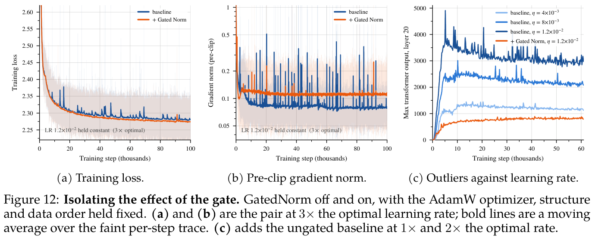
机制：门控的作用。分析 gradient 范数和激活有助于理解这一稳定性裕量。在最优学习率的 2 倍下，相较 AdamW，Muon 训练的 gradient 范数中位数更高、最大激活更大，却产生少得多的 loss spike。加入 GR 会降低 gradient 范数尖峰的频率和幅度，同时降低激活 outlier 的幅值（图 11）。
为隔离门控的作用，我们在最优学习率的 3 倍下，对 28 层模型开展单变量对照，固定 AdamW 优化器与结构，仅切换 GatedNorm（图 12）。启用门控后，尖峰率从每 10k 步 32.0 次降至 3.2 次，越过阈值次数从 256 降至 20。无门控基线的学习率阶梯实验表明，激活 outlier 几乎与学习率成比例增长，而尖峰率增长快得多（图 12c）。在最高学习率下启用门控后，outlier 水平低于最低学习率下的基线。这表明，高学习率训练需要重缩放机制：没有显式门控时，网络通过增大激活 outlier 实现这一点，使自身脆弱；乘性门控直接提供所需的重缩放，使训练保持稳定（Qiu et al., 2025b; 2026）。
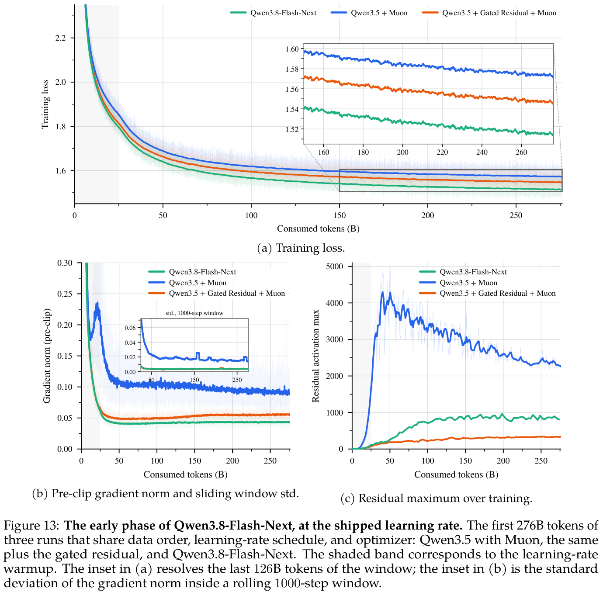
生产训练中的验证。压力测试通过偏离最终采用的配置来放大不稳定性，而我们也验证了稳定性收益在实际生产训练配置下仍然存在。我们比较三次训练的前 276B token，它们共享相同数据顺序、学习率调度和优化器：使用 Muon 的 Qwen3.5 结构、同一结构加 GR，以及进一步改进 GR 并加入 n-gram embedding 层的完整 Qwen3.8-Flash-Next 方案。
在损失方面（图 13a），加入 GR 使 276B token 时的损失降低 0.026，完整 Flash-Next 方案再降低 0.032，相较 Muon 基线总计改善 0.058。这一损失改善转化为显著的基准收益（§4），使 Qwen3.8-Flash-Next 以约九分之一的训练成本，达到与 Qwen3.7-Plus 相当的预训练结果。
在 gradient 范数方面（图 13b），仅使用 Muon 时，其中位数约为任一带门控训练的两倍，p99.9 为其 4.2 倍（0.097/0.298 对 0.053/0.071 和 0.043/0.066），也是唯一超过裁剪阈值的训练。带门控的训练还更平稳：在 1000 步窗口内，标准差低 4.3–4.7 倍，在 8 倍模型规模和生产学习率下复现了压力测试结果。将残差读取与 LM 头之前的最终归一化融合为一个门控读取操作，进一步降低 gradient 范数，可能是 Flash-Next 与 Muon + GR 配置之间差异的主要原因。在激活方面（图 13c），加入 GR 明显降低整个网络中的残差最大值，在每个探测深度都一致。这使训练能够稳定进行，无需 qk-clip（Kimi Team, 2025）和 SwiGLU-clip（Agarwal et al., 2025）等显式激活控制。
我们在广泛能力上，将 Qwen3.8-Flash-Next-Base 与一组强基础模型比较，涵盖通用知识、推理、数学、科学知识、编程及多语言理解。评估覆盖 14 个基准：
表 11 将 Qwen3.8-Flash-Next-Base 与两个强基线 Qwen3.8-27B-Base 和 Qwen3.7-Plus-Base 比较。Qwen3.8-Flash-Next-Base 在全部 14 个基准上一致优于 Qwen3.8-27B-Base，体现出通用知识、推理、数学、编程和多语言能力的提升。更值得关注的是，它在 14 个基准中的 8 个上优于大得多的 Qwen3.7-Plus-Base，在其余基准上保持竞争力。这些结果仅用了约 1/3 的激活参数和 1/3 的训练 token，对应约 1/9 的训练 FLOPs。
除训练效率外，Qwen3.8-Flash-Next 的架构改进以及显著减少的激活参数，也带来显著更低的推理成本。总体而言，Qwen3.8-Flash-Next-Base 在训练与推理中都实现了明显更好的性能与效率权衡。
我们介绍了 Qwen3.8-Flash-Next 的架构，以及选择该架构的消融实验。得到的模型在仅激活三分之一参数、使用三分之一训练 token、消耗约九分之一 FLOPs 的情况下，保留了上一代 397B-A17B 旗舰模型的质量。
这一设计体现了我们的理念：架构、效率与优化构成一个耦合系统。GR 提供的重缩放显著改善训练稳定性，而稳定性裕量使最优学习率和 batch 大小向上移动，改善吞吐量和收敛。分阶段核算成本，引导稀疏 attention 设计聚焦索引器，将 gated residual 的表达能力集中于读取。若从循环中去掉任意一个维度，就会接受看似无害的捷径：后训练之后退化的稀疏写入、预训练期间看似可省略的位置编码，或没有收益却增加优化器步数的 batch 大小 warmup。
1 我们借鉴 Xia et al.（2024）构建 SWEBench-Pretrain。具体而言，我们向基础模型提供问题描述和相关代码文件，要求模型生成 diff 补丁。计算标准补丁与模型生成补丁之间的序列相似度，作为报告的分数。
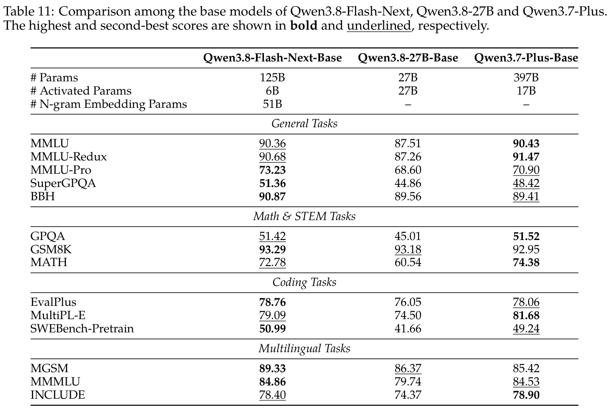
同样重要的是，这些决策如何得到验证。每项论断都在完整评估预算仍可承受的规模下测试，实验设置旨在暴露生产训练的失效模式：压力测试将学习率保持在最优值的若干倍，使不稳定性在适中预算内出现；scaling laws 预测在各项最敏感的区间得到验证。当预训练指标一致、但后期评估出现分歧时，联合流程在问题进入生产之前捕捉到了差异。展望未来，最紧迫的瓶颈是评估吞吐量：若有一种成本更低、能够可靠预测后训练排序的中等规模探测方法，设计空间就会更容易搜索。
核心贡献者：Zihan Qiu, Zekun Wang, Xiao Li, Yanpeng Li, Yang Xu, Yixuan Wang, Huaqing Zhang, Rui Men, Bo Zheng✉, Dayiheng Liu✉
贡献者2：Bochao Mao, Chengruidong Zhang, Fan Zhou, Hao Luo, Haofeng Huang, Haoran Lian, Haoyan Huang, Hongqing Chen, Jianwei Zhang, Jing Xu, Junjie Wang, Langshi Chen, Liangyu Wang, Linlang Jiang, Man Yuan, Minmin Sun, Peng Jin, Siqi Zhang, Siyu Wang, Xingzhang Ren, Yakai Wang, Yi Zhang, Yiming Dong, Yizhong Cao, Yubo Ma, Yunfei Mao
✉ 通讯作者。
2 按字母顺序排列。
Sandhini Agarwal, Lama Ahmad, Jason Ai, Sam Altman, Andy Applebaum, Edwin Arbus, Rahul K Arora, Yu Bai, Bowen Baker, Haiming Bao, 等 gpt-oss-120b 与 gpt-oss-20b 模型卡. arXiv 预印本 arXiv:2508.10925, 2025.
Noah Amsel, David Persson, Christopher Musco, 和 Robert M. Gower. Polar Express：最优矩阵符号方法及其在 Muon 算法中的应用. arXiv 预印本 arXiv:2505.16932, 2025.
Jacob Austin, Augustus Odena, Maxwell Nye, Maarten Bosma, Henryk Michalewski, David Dohan, Ellen Jiang, Carrie Cai, Michael Terry, Quoc Le, 和 Charles Sutton. 使用 LLM 进行程序合成. arXiv 预印本 arXiv:2108.07732, 2021.
Yushi Bai, Qian Dong, Ting Jiang, Xin Lv, Zhengxiao Du, Aohan Zeng, Jie Tang, 和 Juanzi Li. IndexCache：通过跨层索引复用加速稀疏 attention. arXiv 预印本 arXiv:2603.12201, 2026.
Cenk Baykal, Dylan Cutler, Nishanth Dikkala, Nikhil Ghosh, Rina Panigrahy, 和 Xin Wang. 通过交替更新实现高效 Transformer. arXiv 预印本 arXiv:2301.13310, 2023.
Tom B. Brown, Benjamin Mann, Nick Ryder, Melanie Subbiah, Jared Kaplan, Prafulla Dhariwal, Arvind Neelakantan, Pranav Shyam, Girish Sastry, Amanda Askell, 等 语言模型是少样本学习者. In Advances in Neural Information Processing Systems (NeurIPS), 2020. arXiv:2005.14165.
Federico Cassano, John Gouwar, Daniel Nguyen, Sydney Nguyen, Luna Phipps-Costin, Donald Pinckney, Ming-Ho Yee, Yangtian Zi, Carolyn Jane Anderson, Molly Q Feldman, 等 MultiPL-E：评估神经代码生成的可扩展多语言方法. IEEE Transactions on Software Engineering, 49(7):3675–3691, 2023.
Mark Chen, Jerry Tworek, Heewoo Jun, Qiming Yuan, Henrique Ponde de Oliveira Pinto, Jared Kaplan, Harri Edwards, Yuri Burda, Nicholas Joseph, Greg Brockman, 等 评估在代码上训练的 LLM. arXiv 预印本 arXiv:2107.03374, 2021.
Yilong Chen, Yanxi Xie, Zitian Gao, Xin He, Yihao Xiao, Jason Klein Liu, Haoming Luo, Yifan Luo, Zhengmao Ye, Tingwen Liu, Xin Zhao, Ran Tao, 和 Bryan Dai. 超越 N-gram：通过数据感知的 X-GRAM 提取高效扩展 embedding 参数. arXiv 预印本 arXiv:2604.21724, 2026.
Xin Cheng, Wangding Zeng, Damai Dai, Qinyu Chen, Bingxuan Wang, Zhenda Xie, Kezhao Huang, Xingkai Yu, Zhewen Hao, Han Zhang, Yu-Kun Li, Huishuai Zhang, Dongyan Zhao, 和 Wenfeng Liang. 通过可扩展查找实现条件记忆：LLM 稀疏性的新维度. In Proceedings of the 64th Annual Meeting of the Association for Computational Linguistics (Volume 1: Long Papers), 2026.
Aakanksha Chowdhery, Sharan Narang, Jacob Devlin, Maarten Bosma, Gaurav Mishra, Adam Roberts, Paul Barham, Hyung Won Chung, Charles Sutton, Sebastian Gehrmann, 等 PaLM：使用 Pathways 扩展语言建模. Journal of Machine Learning Research, 24, 2023. arXiv:2204.02311.
Karl Cobbe, Vineet Kosaraju, Mohammad Bavarian, Mark Chen, Heewoo Jun, Lukasz Kaiser, Matthias Plappert, Jerry Tworek, Jacob Hilton, Reiichiro Nakano, 等 训练验证器以解决数学文字题. arXiv 预印本 arXiv:2110.14168, 2021.
Mostafa Dehghani, Josip Djolonga, Basil Mustafa, Piotr Padlewski, Jonathan Heek, Justin Gilmer, Andreas Steiner, Mathilde Caron, Robert Geirhos, Ibrahim Alabdulmohsin, 等 将视觉 Transformer 扩展至 220 亿参数. In Proceedings of the 40th International Conference on Machine Learning (ICML), 2023. arXiv:2302.05442.
Xinrun Du, Yifan Yao, Kaijing Ma, Bingli Wang, Tianyu Zheng, King Zhu, Minghao Liu, Yiming Liang, Xiaolong Jin, Zhenlin Wei, 等 SuperGPQA：将 LLM 评估扩展到 285 个研究生学科. arXiv 预印本 arXiv:2502.14739, 2025.
Nelson Elhage, Neel Nanda, Catherine Olsson, Tom Henighan, Nicholas Joseph, Ben Mann, Amanda Askell, Yuntao Bai, Anna Chen, Tom Conerly, Nova DasSarma, Dawn Drain, Deep Ganguli, Zac Hatfield-Dodds, Danny Hernandez, Andy Jones, Jackson Kernion, Liane Lovitt, Kamal Ndousse, Dario Amodei, Tom Brown, Jack Clark, Jared Kaplan, Sam McCandlish, 和 Chris Olah. Transformer 电路的数学框架. Transformer Circuits Thread, 2021. https://Transformer-circuits.pub/2021/framework/index.html.
Essential AI. Muon 在预训练中的实际效率. arXiv 预印本 arXiv:2505.02222, 2025.
Yizhao Gao, Zhichen Zeng, Dayou Du, Shijie Cao, Peiyuan Zhou, Jiaxing Qi, Junjie Lai, Hayden Kwok-Hay So, Ting Cao, Fan Yang, 等 SeerAttention：学习 LLM 中的内在稀疏 attention. arXiv 预印本 arXiv:2410.13276, 2024.
Aryo Pradipta Gema, Joshua Ong Jun Leang, Giwon Hong, Alessio Devoto, Alberto Carlo Maria Mancino, Rohit Saxena, Xuanli He, Yu Zhao, Xiaotang Du, Mohammad Reza Ghasemi Madani, 等 MMLU 的研究已经结束了吗？ CoRR, abs/2406.04127, 2024.
Gemma Team. Gemma 4 技术报告. arXiv 预印本 arXiv:2607.02770, 2026.
GLM-5-Team. GLM-5：从 Vibe Coding 到 agent 工程, 2026. URL https://arxiv.org/abs/2602.15763.
Google DeepMind. Gemma 3n 模型概览, 2025.
Priya Goyal, Piotr Dollár, Ross Girshick, Pieter Noordhuis, Lukasz Wesolowski, Aapo Kyrola, Andrew Tulloch, Yangqing Jia, 和 Kaiming He. 精确的大 batch SGD：在 1 小时内训练 ImageNet. arXiv 预印本 arXiv:1706.02677, 2017.
Kaiming He, Xiangyu Zhang, Shaoqing Ren, 和 Jian Sun. 用于图像识别的深度残差学习. In Proceedings of the IEEE Conference on Computer Vision 和 Pattern Recognition (CVPR), 2016. arXiv:1512.03385.
Dan Hendrycks, Collin Burns, Steven Basart, Andy Zou, Mantas Mazeika, Dawn Song, 和 Jacob Steinhardt. 衡量大规模多任务语言理解. In ICLR. OpenReview.net, 2021a.
Dan Hendrycks, Collin Burns, Saurav Kadavath, Akul Arora, Steven Basart, Eric Tang, Dawn Song, 和 Jacob Steinhardt. 使用 MATH 数据集衡量数学问题求解能力. arXiv 预印本 arXiv:2103.03874, 2021b.
Cheng-Ping Hsieh, Simeng Sun, Samuel Kriman, Shantanu Acharya, Dima Rekesh, Fei Jia, Yang Zhang, 和 Boris Ginsburg. RULER：你的长上下文语言模型真正的上下文大小是多少？ arXiv 预印本 arXiv:2404.06654, 2024.
Gao Huang, Zhuang Liu, Laurens van der Maaten, 和 Kilian Q. Weinberger. 密集连接卷积网络. In Proceedings of the IEEE Conference on Computer Vision 和 Pattern Recognition (CVPR), 2017. arXiv:1608.06993.
Hongzhi Huang, Defa Zhu, Banggu Wu, Yutao Zeng, Ya Wang, Qiyang Min, 和 Xun Zhou. Over-Tokenized Transformer：词表通常值得扩展. In Proceedings of the 42nd International Conference on Machine Learning, 2025.
W. Ronny Huang, Tara N. Sainath, Cal Peyser, Shankar Kumar, David Rybach, 和 Trevor Strohman. 用于长尾语音识别的查找表循环语言模型. In Interspeech 2021, 2021.
Carlos E. Jimenez, John Yang, Alexander Wettig, Shunyu Yao, Kexin Pei, Ofir Press, 和 Karthik Narasimhan. SWE-bench：语言模型能解决真实世界的 GitHub issue 吗？ In International Conference on Learning Representations (ICLR), 2024. arXiv:2310.06770.
Keller Jordan 和 Braden Koszarsky. modded-nanogpt（来自 nanoGPT speedrun 的值 embedding）. github.com/KellerJordan/modded-nanogpt, 2024.
Keller Jordan, Yuchen Jin, Vlado Boza, Jiacheng You, Franz Cesista, Laker Newhouse, 和 Jeremy Bernstein. Muon：用于神经网络隐藏层的优化器, 2024 年 12 月. URL https://kellerjordan.github.io/posts/muon/. 博客文章。
Jared Kaplan, Sam McCandlish, Tom Henighan, Tom B. Brown, Benjamin Chess, Rewon Child, Scott Gray, Alec Radford, Jeffrey Wu, 和 Dario Amodei. 神经语言模型的 scaling laws. arXiv 预印本 arXiv:2001.08361, 2020.
Kimi Team. Kimi K2：开放的 agent 智能. arXiv 预印本 arXiv:2507.20534, 2025.
Aixin Liu, Bei Feng, Bing Xue, Bingxuan Wang, Bochao Wu, Chengda Lu, Chenggang Zhao, Chengqi Deng, Chenyu Zhang, Chong Ruan, 等 DeepSeek-V3 技术报告. arXiv 预印本 arXiv:2412.19437, 2024.
Aixin Liu, Aoxue Mei, Bangcai Lin, Bing Xue, Bingxuan Wang, Bingzheng Xu, Bochao Wu, Bowei Zhang, Chaofan Lin, Chen Dong, 等 DeepSeek-V3.2：推进开放 LLM 的前沿. arXiv 预印本 arXiv:2512.02556, 2025a.
Hong Liu, Jiaqi Zhang, Chao Wang, Xing Hu, Linkun Lyu, Jiaqi Sun, Xurui Yang, Bo Wang, Fengcun Li, Yulei Qian, Lingtong Si, Yerui Sun, Rumei Li, Peng Pei, Yuchen Xie, 和 Xunliang Cai. 在语言模型中，扩展 embedding 优于扩展专家. arXiv 预印本 arXiv:2601.21204, 2026.
Jiawei Liu, Chunqiu Steven Xia, Yuyao Wang, 和 Lingming Zhang. ChatGPT 生成的代码真的正确吗？对 LLM 代码生成的严格评估. arXiv 预印本 arXiv:2305.01210, 2023.
Jingyuan Liu, Jianlin Su, Xingcheng Yao, Zhejun Jiang, Guokun Lai, Yulun Du, Yidao Qin, Weixin Xu, Enzhe Lu, Junjie Yan, Yanru Chen, Huabin Zheng, Yibo Liu, Shaowei Liu, Bohong Yin, Weiran He, Han Zhu, Yuzhi Wang, Jianzhou Wang, Mengnan Dong, Zheng Zhang, Yongsheng Kang, Hao Zhang, Xinran Xu, Yutao Zhang, Yuxin Wu, Xinyu Zhou, 和 Zhilin Yang. Muon 可扩展到 LLM 训练. arXiv 预印本 arXiv:2502.16982, 2025b.
Sam McCandlish, Jared Kaplan, Dario Amodei, 和 OpenAI Dota Team. 大 batch 训练的经验模型. arXiv 预印本 arXiv:1812.06162, 2018.
Xin Men, Mingyu Xu, Qingyu Zhang, Bingning Wang, Hongyu Lin, Yaojie Lu, Xianpei Han, 和 Weipeng Chen. ShortGPT：LLM 中的层比你预期的更加冗余, 2024. URL https://arxiv.org/abs/2403.03853.
OpenAI. 多语言大规模多任务语言理解（MMMLU）, 2024. 数据集可在 Hugging Face 获取。
OpenAI. OpenAI MRCR：长上下文多针 Needle-in-a-Haystack 基准. https://huggingface.co/datasets/openai/mrcr, 2025. 数据集，首次发布于 2025 年 4 月 12 日。
Razvan Pascanu, Tomas Mikolov, 和 Yoshua Bengio. 论训练循环神经网络的困难. In Proceedings of the 30th International Conference on Machine Learning (ICML), 2013. arXiv:1211.5063.
Zihan Qiu, Zeyu Huang, Bo Zheng, Kaiyue Wen, Zekun Wang, Rui Men, Ivan Titov, Dayiheng Liu, Jingren Zhou, 和 Junyang Lin. 细节中的魔鬼：为训练专业化 MoE 模型实现负载均衡损失, 2025a. URL https://arxiv.org/abs/2501.11873.
Zihan Qiu, Zekun Wang, Bo Zheng, Zeyu Huang, Kaiyue Wen, Songlin Yang, Rui Men, Le Yu, Fei Huang, Suozhi Huang, 等 LLM 的 gated attention：非线性、稀疏性与无 attention sink. arXiv 预印本 arXiv:2505.06708, 2025b.
Zihan Qiu, Zeyu Huang, Kaiyue Wen, Peng Jin, Bo Zheng, Yuxin Zhou, Haofeng Huang, Zekun Wang, Xiao Li, Huaqing Zhang, Yang Xu, Haoran Lian, Siqi Zhang, Rui Men, Jianwei Zhang, Ivan Titov, Dayiheng Liu, Jingren Zhou, 和 Junyang Lin. Attention 与 residual sink 的统一视角：outlier 驱动的重缩放对 Transformer 训练至关重要, 2026. URL https://arxiv.org/abs/2601.22966.
Qwen Team. Qwen2.5 技术报告. arXiv 预印本 arXiv:2412.15115, 2024.
Qwen Team. Qwen3.5：迈向原生多模态 agent, 2026 年 2 月. URL https://qwen.ai/blog?id=qwen3.5.
David Rein, Betty Li Hou, Asa Cooper Stickland, Jackson Petty, Richard Yuanzhe Pang, Julien Dirani, Julian Michael, 和 Samuel R Bowman. GPQA：研究生级、无法仅靠 Google 搜索解答的问答基准. In First Conference on Language Modeling, 2024.
Angelika Romanou, Negar Foroutan, Anna Sotnikova, Zeming Chen, Sree Harsha Nelaturu, Shivalika Singh, Rishabh Maheshwary, Micol Altintas, Alham Fikri Aji, Fahim Faisal, 等 INCLUDE：借助地区知识评估多语言理解. arXiv 预印本 arXiv:2411.19799, 2024.
Aurko Roy, Rohan Anil, Guangda Lai, Benjamin Lee, Jeffrey Zhao, Shuyuan Zhang, Shibo Wang, Ye Zhang, Shen Wu, Rigel Swavely, Tao Yu, Phuong Dao, Christopher Fifty, Zhifeng Chen, 和 Yonghui Wu. N-Grammer：使用潜在 n-gram 增强 Transformer. arXiv 预印本 arXiv:2207.06366, 2022.
RWKV Community. RWKV-V8 的 DeepEmbed. https://wiki.rwkv.com/basic/architecture.html#rwkv-v8-s-deepembed, 2025. 访问日期： 2026-08-20.
Ranajoy Sadhukhan, Sheng Cao, Harry Dong, Changsheng Zhao, Attiano Purpura-Pontoniere, Yuandong Tian, Zechun Liu, 和 Beidi Chen. STEM：使用 embedding 模块扩展 Transformer. arXiv 预印本 arXiv:2601.10639, 2026.
Imanol Schlag, Kazuki Irie, 和 Jürgen Schmidhuber. 线性 Transformer 实质上是快权重编程器. In International conference on machine learning, pp. 9355–9366. PMLR, 2021.
Seed. 虚拟宽度网络. arXiv 预印本 arXiv:2511.11238, 2025.
Noam Shazeer. 快速 Transformer decoding：只需一个写入头. arXiv 预印本 arXiv:1911.02150, 2019.
Noam Shazeer. GLU 变体改善 Transformer. arXiv 预印本 arXiv:2002.05202, 2020.
Freda Shi, Mirac Suzgun, Markus Freitag, Xuezhi Wang, Suraj Srivats, Soroush Vosoughi, Hyung Won Chung, Yi Tay, Sebastian Ruder, Denny Zhou, 等 语言模型是多语言 CoT 推理者. arXiv 预印本 arXiv:2210.03057, 2022.
Mohammad Shoeybi, Mostofa Patwary, Raul Puri, Patrick LeGresley, Jared Casper, 和 Bryan Catanzaro. Megatron-LM：使用模型并行训练数十亿参数语言模型. arXiv 预印本 arXiv:1909.08053, 2019.
Rupesh Kumar Srivastava, Klaus Greff, 和 Jürgen Schmidhuber. Highway Networks（高速公路网络）. arXiv 预印本 arXiv:1505.00387, 2015. 发表于 ICML 2015 深度学习研讨会。
Jianlin Su, Murtadha Ahmed, Yu Lu, Shengfeng Pan, Wen Bo, 和 Yunfeng Liu. RoFormer：通过 RoPE 增强 Transformer. Neurocomputing, 568:127063, 2024.
Yutao Sun, Li Dong, Yi Zhu, Shaohan Huang, Wenhui Wang, Shuming Ma, Quanlu Zhang, Jianyong Wang, 和 Furu Wei. 只需缓存一次：语言模型的解码器—解码器架构. arXiv 预印本 arXiv:2405.05254, 2024.
Mirac Suzgun, Nathan Scales, Nathanael Schärli, Sebastian Gehrmann, Yi Tay, Hyung Won Chung, Aakanksha Chowdhery, Quoc Le, Ed H Chi, Denny Zhou, 等 具有挑战性的 BIG-Bench 任务，以及 CoT 能否解决这些任务. In Findings of the Association for Computational Linguistics: ACL 2023, pp. 13003–13051, 2023.
Kimi Team, Guangyu Chen, Yu Zhang, Jianlin Su, Weixin Xu, Siyuan Pan, Yaoyu Wang, Yucheng Wang, Guanduo Chen, Bohong Yin, Yutian Chen, Junjie Yan, Ming Wei, Y. Zhang, Fanqing Meng, Chao Hong, Xiaotong Xie, Shaowei Liu, Enzhe Lu, Yunpeng Tai, Yanru Chen, Xin Men, Haiqing Guo, Y. Charles, Haoyu Lu, Lin Sui, Jinguo Zhu, Zaida Zhou, Weiran He, Weixiao Huang, Xinran Xu, Yuzhi Wang, Guokun Lai, Yulun Du, Yuxin Wu, Zhilin Yang, 和 Xinyu Zhou. Attention 残差, 2026. URL https://arxiv.org/abs/2603.15031.
Albert Tseng 和 Christopher De Sa. L3：大型查找层. In Forty-third International Conference on Machine Learning, 2026.
Ashish Vaswani, Noam Shazeer, Niki Parmar, Jakob Uszkoreit, Llion Jones, Aidan N Gomez, Łukasz Kaiser, 和 Illia Polosukhin. 只需 attention. Advances in neural information processing systems, 30, 2017.
Liangyu Wang, Siqi Zhang, Junjie Wang, Yiming Dong, Bo Zheng, Zihan Qiu, Shengkun Tang, Di Wang, Rui Men, 和 Dayiheng Liu. Canzona：面向分布式矩阵优化器的统一、异步、负载均衡框架, 2026a. URL https://arxiv.org/abs/2602.06079.
Yixuan Wang, Huang He, Siqi Bao, Haifeng Wang, Qingfu Zhu, Wanxiang Che, 等 ProxyAttn：通过代表性头引导稀疏 attention. In International Conference on Learning Representations, volume 2026, pp. 18603–18617, 2026b.
Yubo Wang, Xueguang Ma, Ge Zhang, Yuansheng Ni, Abhranil Chandra, Shiguang Guo, Weiming Ren, Aaran Arulraj, Xuan He, Ziyan Jiang, 等 MMLU-Pro：更稳健、更具挑战性的多任务语言理解基准. Advances in Neural Information Processing Systems, 37:95266–95290, 2024.
Mitchell Wortsman, Peter J. Liu, Lechao Xiao, Katie Everett, Alex Alemi, Ben Adlam, John D. Co-Reyes, Izzeddin Gur, Abhishek Kumar, Roman Novak, Jeffrey Pennington, Jascha Sohl-Dickstein, Kelvin Xu, Jaehoon Lee, Justin Gilmer, 和 Simon Kornblith. 大规模 Transformer 训练不稳定性的小规模代理实验. arXiv 预印本 arXiv:2309.14322, 2023.
Chunqiu Steven Xia, Yinlin Deng, Soren Dunn, 和 Lingming Zhang. Agentless：揭开基于 LLM 的软件工程 agent 的神秘面纱. arXiv 预印本 arXiv:2407.01489, 2024.
Zhenda Xie, Yixuan Wei, Huanqi Cao, Chenggang Zhao, Chengqi Deng, Jiashi Li, Damai Dai, Huazuo Gao, Jiang Chang, Kuai Yu, Liang Zhao, Shangyan Zhou, Zhean Xu, Zhengyan Zhang, Wangding Zeng, Shengding Hu, Yuqing Wang, Jingyang Yuan, Lean Wang, 和 Wenfeng Liang. mHC：流形约束的 Hyper-Connections. arXiv 预印本 arXiv:2512.24880, 2025.
Ruibin Xiong, Yunchang Yang, Di He, Kai Zheng, Shuxin Zheng, Chen Xing, Huishuai Zhang, Yanyan Lan, Liwei Wang, 和 Tie-Yan Liu. 论 Transformer 架构中的层归一化. In Proceedings of the 37th International Conference on Machine Learning (ICML), volume 119 of Proceedings of Machine Learning Research, 2020. arXiv:2002.04745.
An Yang, Anfeng Li, Baosong Yang, Beichen Zhang, Binyuan Hui, Bo Zheng, Bowen Yu, Chang Gao, Chengen Huang, Chenxu Lv, 等 Qwen3 技术报告. arXiv 预印本 arXiv:2505.09388, 2025.
Songlin Yang 和 Yu Zhang. FLA：基于 Triton、面向硬件高效实现线性 attention 机制的库, 2024 年 1 月. URL https://github.com/fla-org/flash-linear-attention.
Songlin Yang, Jan Kautz, 和 Ali Hatamizadeh. Gated Delta Networks：使用 Delta 规则改善 Mamba2. arXiv 预印本 arXiv:2412.06464, 2024.
Zihao Ye, Lequn Chen, Ruihang Lai, Wuwei Lin, Yineng Zhang, Stephanie Wang, Tianqi Chen, Baris Kasikci, Vinod Grover, Arvind Krishnamurthy, 等 FlashInfer：面向 LLM 推理服务的高效、可定制 attention 引擎. Proceedings of Machine Learning 和 Systems, 7, 2025.
Da Yu, Edith Cohen, Badih Ghazi, Yangsibo Huang, Pritish Kamath, Ravi Kumar, Daogao Liu, 和 Chiyuan Zhang. 扩展语言模型中的 embedding 层. In Advances in Neural Information Processing Systems, volume 38, 2025.
Hanlin Zhang, Depen Morwani, Nikhil Vyas, Jingfeng Wu, Difan Zou, Udaya Ghai, Dean Foster, 和 Sham Kakade. 预训练中的临界 batch 大小如何缩放？ arXiv 预印本 arXiv:2410.21676, 2024.
Susan Zhang, Stephen Roller, Naman Goyal, Mikel Artetxe, Moya Chen, Shuohui Chen, Christopher Dewan, Mona Diab, Xian Li, Xi Victoria Lin, Todor Mihaylov, Myle Ott, Sam Shleifer, Kurt Shuster, Daniel Simig, Punit Singh Koura, Anjali Sridhar, Tianlu Wang, 和 Luke Zettlemoyer. OPT：开放的预训练 Transformer 语言模型. arXiv 预印本 arXiv:2205.01068, 2022.
Xiangdong Zhang, Xiaohan Qin, Sunan Zou, Tuo Dai, Xiaoming Shi, Huaijin Wu, Yebin Yang, Zhuo Xia, Shaofeng Zhang, Lin Yao, Yuliang Liu, Yu Cheng, 和 Junchi Yan. xHC：扩展的 Hyper-Connections, 2026. URL https://arxiv.org/abs/2607.14530.
Zhanchao Zhou, Tianyi Wu, Zhiyun Jiang, Fares Obeid, 和 Zhenzhong Lan. 值残差学习. arXiv 预印本 arXiv:2410.17897, 2024.
Defa Zhu, Hongzhi Huang, Zihao Huang, Yutao Zeng, Yunyao Mao, Banggu Wu, Qiyang Min, 和 Xun Zhou. Hyper-Connections. arXiv 预印本 arXiv:2409.19606, 2024.